| Lv04_0001 |
 |
あゆ |
キュウリウオ目キュウリウオ科の魚。川や海などを回遊する。 |
| Lv04_0002 |
|
ほくそえ |
うまくいったことに満足して、一人ひそかに笑う。 |
| Lv04_0003 |
|
はざかいき |
季節性のある商品において、古品から新品に切り替える直前の時期。 |
| Lv04_0004 |
|
おびただ |
数や量が非常に多い。ものすごい。 |
| Lv04_0005 |
|
しがらみ |
引き留め、まとわりつくもの。 |
| Lv04_0006 |
|
きせる |
日本の刻みたばこ用の喫煙具。 |
| Lv04_0007 |
|
きんちょう |
堅い約束をすること。武士同士が刀の鍔を打ち合わせたことから。 |
| Lv04_0008 |
|
たなごころ |
てのひら。手の裏。たなうら。 |
| Lv04_0009 |
|
かぞ |
数量や順番を調べる。 |
| Lv04_0010 |
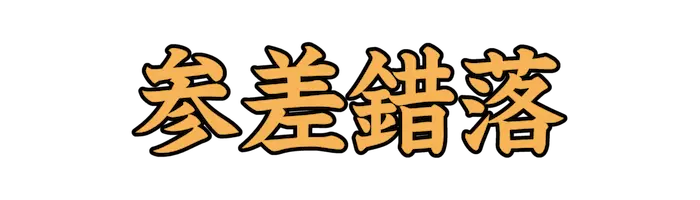 |
しんしさくらく |
長いものや短いものが入り混じり、不揃いである様子。 |
| Lv04_0011 |
|
かまびす |
やかましい。かしましい。 |
| Lv04_0012 |
|
したた |
書き記す。 |
| Lv04_0013 |
|
ふさ |
気分がすぐれず、ゆううつな気持ちになる。 |
| Lv04_0014 |
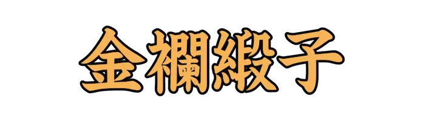 |
きんらんどんす |
華やかで美しい、高価な織物のこと。『金襴』『緞子』どちらも高価な織物。 |
| Lv04_0015 |
|
ぶらじる |
南アメリカに位置する連邦共和制国家。首都はブラジリア。 |
| Lv04_0016 |
|
がらすど |
ガラスをはめたドアや扉や窓などのこと。 |
| Lv04_0017 |
|
やし |
縁日などで興行や物売りをする業者。『的屋(てきや)』とも。 |
| Lv04_0018 |
|
なた |
幅のある厚い刃物に柄をつけたもの。まき割り、樹木の枝下ろしなどに用いる。 |
| Lv04_0019 |
|
はすぎり |
斜めに切ること。 |
| Lv04_0020 |
|
よな |
米を水に入れてゆすってとぐ。 |
| Lv04_0021 |
|
たんぽぽ |
キク科タンポポ属の総称。 |
| Lv04_0022 |
 |
ひんしゅく |
不快に感じて顔をしかめること。まゆをひそめること。 |
| Lv04_0023 |
|
はびこ |
草木などが繁茂する。よくないものの勢いが盛んになって広まる。 |
| Lv04_0024 |
|
あずまや |
庭園などに眺望、休憩の目的で設置される簡素な小屋。 |
| Lv04_0025 |
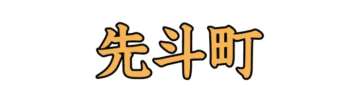 |
ぽんとちょう |
京都市中京区に位置する花街および歓楽街。 |
| Lv04_0026 |
|
はんばく |
他の意見に反対し、論じ難ずること。 |
| Lv04_0027 |
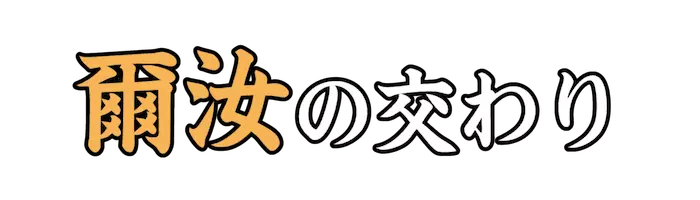 |
じじょ |
お互いに『きさま』『おまえ』と呼び合えるほど親密な仲。 |
| Lv04_0028 |
 |
あらたか |
神仏の霊験や利益の効力が著しいこと。 |
| Lv04_0029 |
|
ごうとう |
気持ちが大きく、細かいことに気を振るわれないさま。 |
| Lv04_0030 |
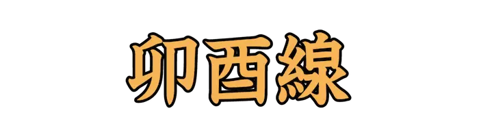 |
ぼうゆうせん |
子午面に直行する平面が地表面と交わる線。 |
| Lv04_0031 |
|
さんしゃていりつ |
力を持つ三つの者が並び立っていること。 |
| Lv04_0032 |
|
いくいく |
文物や香気の盛んなさま。 |
| Lv04_0033 |
|
もぎどう |
人の道理から外れた非情なこと。『無義道(もぎどう)』とも。 |
| Lv04_0034 |
|
せいあ |
井戸の中にいる蛙。転じて、見識の狭いことや人物のたとえ。 |
| Lv04_0035 |
|
せんがい |
切りそろえること。 |
| Lv04_0036 |
|
おうきゃく |
イチョウの別称。 |
| Lv04_0037 |
|
がえ |
承諾する。聞き入れる。引き受ける。 |
| Lv04_0038 |
|
いいだくだく |
人の言いなりになり、なんでも従うこと。 |
| Lv04_0039 |
|
ついしゅ |
表面に朱色の漆を使った彫漆の一種。 |
| Lv04_0040 |
|
かんかん |
気性が強く信念を曲げないさま。剛直なさま。 |
| Lv04_0041 |
|
やえむぐら |
アカネ科の越年草。また、『ムグラ』と総称される雑草。 |
| Lv04_0042 |
|
うてな |
四方を眺めるために建てられた高い建物。また、極楽に往生した者の座る蓮の花の台。 |
| Lv04_0043 |
|
かば |
他から害を受けないように、助け守る。いたわり守る。 |
| Lv04_0044 |
|
まこも |
イネ科マコモ属の多年草。 |
| Lv04_0045 |
|
みずのえ |
十干の九番目。陰陽五行説では水性の陽に割り当てられる。 |
| Lv04_0046 |
|
えんおう |
夫婦の仲が非常に良いことのたとえ。 |
| Lv04_0047 |
|
はんぎゃく、ほんぎゃく |
国や主君や世間などにそむいて逆らうこと。 |
| Lv04_0048 |
|
じんぜん |
為すこともなく、月日が経過するさま。 |
| Lv04_0049 |
|
しゃくじょう |
修行僧が行脚の際に持参する杖。 |
| Lv04_0050 |
|
くついし |
柱などの下に据える石。 |
| Lv04_0051 |
|
ぼくせん |
占うこと。 |
| Lv04_0052 |
|
とき |
コウノトリ目トキ科の鳥。三文字では『のがん』となり、別種扱い。 |
| Lv04_0053 |
|
よしみ |
親しいつきあい。また、その親しみ。 |
| Lv04_0054 |
|
たんぼ、でんぽ |
田になっている土地。 |
| Lv04_0055 |
|
いっきょいちえい |
常に消えたり現れたりするため、変化の予測がつかないことのたとえ。 |
| Lv04_0056 |
|
だいじょうえ |
天皇が皇位継承に際して行う儀式。『新嘗祭(にいなめさい)』と似た内容。 |
| Lv04_0057 |
|
あとぶつ |
金銭のこと。 |
| Lv04_0058 |
|
ばいも |
ユリ科の多年草。『アミガサユリ』とも。 |
| Lv04_0059 |
|
かんごり |
寒中、身体に冷水を浴び心身を清めて神仏に祈願すること。 |
| Lv04_0060 |
|
ねいけいじ |
すぐれた子や神童のこと。『麒麟児(きりんじ)』とも。 |
| Lv04_0061 |
|
ほぞ |
すでに及ばないことを後悔する例え。 |
| Lv04_0062 |
|
とこなめ |
愛知県の尾張地方にある市。 |
| Lv04_0063 |
|
おうむ |
オウム目オウム科の鳥の総称。 |
| Lv04_0064 |
|
あまね |
もれなくすべてに及んでいるさま。広く。一般に。 |
| Lv04_0065 |
|
ごうがしゃ |
数の単位の一つ。一般的には10の52乗を指す。 |
| Lv04_0066 |
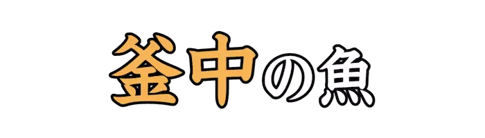 |
ふちゅう |
危機が迫っていることを知らずに、のんびりとしていることの例え。 |
| Lv04_0067 |
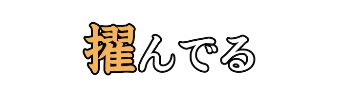 |
ぬき |
ひときわ高く出る。ひときわすぐれる。秀でる。 |
| Lv04_0068 |
|
ふんじょう |
もめること。 |
| Lv04_0069 |
|
うしとら |
八卦のひとつ。北東を示す。 |
| Lv04_0070 |
|
あがな |
罪のつぐないをする。また、あるものを代償として求める。 |
| Lv04_0071 |
|
おもね |
人に気に入られるようにへつらうこと。 |
| Lv04_0072 |
|
ねぎ |
神職の名称の一つ。 |
| Lv04_0073 |
|
しょきゅう |
きねとうすのこと。 |
| Lv04_0074 |
|
すこぶ、かたよ |
程度がはなはだしいさま。非常に。また、ある基準から外れて一方に寄る。 |
| Lv04_0075 |
|
おだまき |
キンポウゲ科の多年草。また、麻糸を空の鞠状に巻いたもの。 |
| Lv04_0076 |
|
つまさき、そうせん |
足先の部分。 |
| Lv04_0077 |
|
あだな |
本名とは別に、その人の容姿や性質などの特徴から、他人がつける名。 |
| Lv04_0078 |
|
たねちが |
母親が同じで父親が異なる兄弟姉妹。 |
| Lv04_0079 |
|
ぼたん |
衣類の合わせ目などに用いるもの。他の一方に設けた穴をくぐらせて留める。 |
| Lv04_0080 |
|
ひっぱく |
行き詰まって余裕のなくなること。事態が差し迫ること。 |
| Lv04_0081 |
|
ぼつねん |
死んだ時の年齢。 |
| Lv04_0082 |
|
すずりばこ |
硯や筆、墨などを入れておく箱。 |
| Lv04_0083 |
|
かんしゃく |
ちょっとしたことにも感情を抑えきれないで激しく怒り出すこと。 |
| Lv04_0084 |
|
うんちく |
蓄えた深い学問や知識。 |
| Lv04_0085 |
|
きくらげ |
キクラゲ目キクラゲ科のキノコ。 |
| Lv04_0086 |
|
すだ |
虫などが集まってにぎやかに鳴く。また、群れをなして集まる。むらがる。 |
| Lv04_0087 |
|
なず |
そのことに心がとらわれる。こだわる。また、なじむ。なれ親しむ。 |
| Lv04_0088 |
|
ていたらく |
人の様子、ありさまのこと。 |
| Lv04_0089 |
|
すす、そそ |
水で汚れを洗い落とす。汚名を新たな名誉を得ることによって消す。 |
| Lv04_0090 |
|
たの |
頼る。たよりとする。 |
| Lv04_0091 |
|
ひなげし |
キンポウゲ目ケシ科の一年草。『シャーレイポピー』とも。 |
| Lv04_0092 |
|
くさむら |
草が群がり生えている所。 |
| Lv04_0093 |
|
そばだ |
山などが高くそびえ立つこと。 |
| Lv04_0094 |
|
くちずさ、くちすさ |
心に浮かぶままに口にする。 |
| Lv04_0095 |
|
にじゅう |
十の二倍の数。はたち。 |
| Lv04_0096 |
|
なまこ |
ナマコ綱に分類される棘皮動物の総称。 |
| Lv04_0097 |
|
しっぺがえ |
即座に仕返しをすること。 |
| Lv04_0098 |
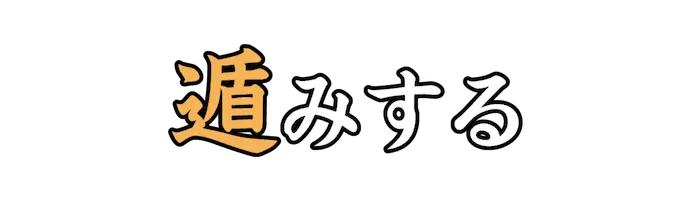 |
しりご |
おじけて、あとじさりする。気後れしてためらう。ぐずぐずする。 |
| Lv04_0099 |
|
あき |
色が非常に白く、はっきりしているさま。 |
| Lv04_0100 |
|
かざ |
うわべを取り繕う。 |
| Lv04_0101 |
|
いもた |
消化不良で胃の辺りが重たく感じること。 |
| Lv04_0102 |
|
かざ |
手に持って掲げる。物の上へ、手などをおおうように差し出す。 |
| Lv04_0103 |
|
きんぽうげ |
キンポウゲ科キンポウゲ属の野草。『ウマノアシガタ』とも。 |
| Lv04_0104 |
 |
くこ |
ナス科クコ属の落葉低木。実を杏仁豆腐の上に載せたりする。 |
| Lv04_0105 |
 |
かわうそ |
食肉目イタチ科カワウソ亜科の動物。 |
| Lv04_0106 |
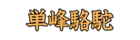 |
ひとこぶらくだ、たんぽうらくだ |
ラクダ科に属する大型の偶蹄類。 |
| Lv04_0107 |
|
こまねずみ |
ハツカネズミの突然変異種。くるくると回る特性がある。 |
| Lv04_0108 |
|
そよ |
風に吹かれて草や木の葉などがかすかに音をたてて揺れ動く。 |
| Lv04_0109 |
|
たぶら |
誘惑して本心を失わせたり、騙すこと。 |
| Lv04_0110 |
|
らっきょう |
ユリ科ネギ属の多年草。 |
| Lv04_0111 |
 |
つづま |
省いたり、倹約するさま。 |
| Lv04_0112 |
 |
かまぼこ |
魚肉のすり身を成形して加熱した、魚肉練り製品の一種。 |
| Lv04_0113 |
|
ふけ |
一つの物事に熱中する。夢中になる。 |
| Lv04_0114 |
|
ごうりゃく |
脅かして、かすめ取ること。 |
| Lv04_0115 |
|
ことわざ |
昔から言い伝えられてきた、風刺や格言、知識などを含んだ簡潔な言葉。 |
| Lv04_0116 |
|
しか |
そうではあるが。けれども。 |
| Lv04_0117 |
 |
いちじく |
クワ科イチジク属の落葉高木。 |
| Lv04_0118 |
|
おおよそ |
大雑把な内容。大要。大体のところ。 |
| Lv04_0119 |
|
すいか |
姓名が不明であること。また、誰なのか身分を問いただすこと。 |
| Lv04_0120 |
|
お |
こわがる。びくびくする。 |
| Lv04_0121 |
|
ちょうず |
神社や寺院において、参拝前に手や口を清めるための水。 |
| Lv04_0122 |
|
ぎょうこう |
偶然に得るしあわせ。 |
| Lv04_0123 |
|
いきさつ |
物事のこみいった事情。事件の経過。 |
| Lv04_0124 |
|
にかわ |
動物の皮などを煮詰めて抽出した物質。 |
| Lv04_0125 |
|
そうさ |
千葉県の北東部に位置する市。植木や苗木の産地として知られる。 |
| Lv04_0126 |
|
やちまた |
千葉県のほぼ中央部に位置する市。県の代表的な畑作地帯とされている。 |
| Lv04_0127 |
|
ろうだん |
利益や権利をひとりじめにすること。 |
| Lv04_0128 |
|
にゅうめん |
そうめんを出し汁で煮るなどした料理。『入麺(にゅうめん)』とも。 |
| Lv04_0129 |
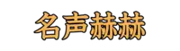 |
めいせいかくかく、めいせいかっかく |
世間の評判が非常によいこと。 |
| Lv04_0130 |
|
かた |
うまい事を言ってだます。 |
| Lv04_0131 |
|
ひいらぎ |
モクセイ科モクセイ属の常緑小高木。 |
| Lv04_0132 |
|
ことほ |
お祝いや、喜びの言葉を言う。 |
| Lv04_0133 |
|
はなむけ |
旅に出る人などに贈る、金銭や詩歌のこと。餞別。 |
| Lv04_0134 |
|
おみくじ |
神仏のお告げを得て、吉凶を知るために引くくじ。 |
| Lv04_0135 |
|
きょき |
すすり泣いたり、むせび泣くこと。 |
| Lv04_0136 |
|
あくび、けんしん |
眠い時や疲れたとき、思わず口を大きく開け深呼吸する運動。 |
| Lv04_0137 |
|
はくち |
日本の元号の一つ。また、白色のキジ。 |
| Lv04_0138 |
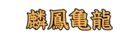 |
りんぽうきりゅう、りんぽうきりょう |
平和が訪れた時に世に現れるとされている、霊獣、霊鳥。また、珍品や聖人の例え。 |
| Lv04_0139 |
|
ばくろちょう、ばくろうまち |
東京都中央区の日本橋馬喰町のこと。総武本線に設置されている駅の一つ。 |
| Lv04_0140 |
|
あびこ |
千葉県の北西部に位置する市。また、大阪市住吉区南東部の地名。 |
| Lv04_0141 |
|
ぬえ |
日本で伝承される空想上の妖怪。 |
| Lv04_0142 |
|
けいちつ |
春の暖かさを感じて、冬ごもりしていた虫が外に這い出てくる時期のこと。 |
| Lv04_0143 |
|
みくだりはん |
江戸時代において、妻に与える離縁状。 |
| Lv04_0144 |
|
つちくれ |
土でできた塊。 |
| Lv04_0145 |
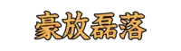 |
ごうほうらいらく |
心が大きく小さいことにこだわらないさま。 |
| Lv04_0146 |
|
うずたか |
盛り上がって高い。 |
| Lv04_0147 |
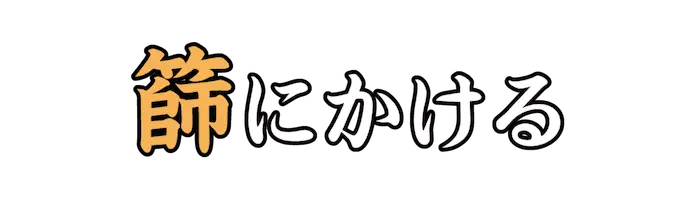 |
ふるい |
ふるいを使ってより分けること。転じて、基準に合わないものを除くこと。 |
| Lv04_0148 |
 |
がいがい |
一面に白い様子。 |
| Lv04_0149 |
|
あばた |
天然痘が治ったあとの皮膚のくぼみ。 |
| Lv04_0150 |
|
えくぼ |
人が笑うときにできる頬のくぼみのこと。 |
| Lv04_0151 |
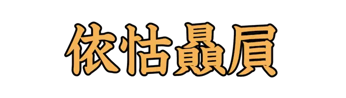 |
えこひいき |
他よりも特に、その者に目をかけること。 |
| Lv04_0152 |
|
れいろう |
美しく照り輝くさま。 |
| Lv04_0153 |
|
さぼてん |
サボテン科の植物の総称。 |
| Lv04_0154 |
|
でくのぼう |
でくのように役に立たない人のこと。 |
| Lv04_0155 |
|
がすかん |
都市ガス輸送のために使われた、配管用炭素鋼鋼管。 |
| Lv04_0156 |
|
かかお |
アオイ科またはアオギリ科の常緑樹。チョコレートやココアの主原料。 |
| Lv04_0157 |
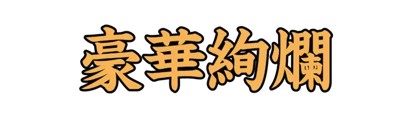 |
ごうかけんらん |
色や形が豊かであって光り輝いているさま。 |
| Lv04_0158 |
|
ひが |
物事を素直に受け取らずに、曲げて考える。自分が不利なようにゆがめて考える。 |
| Lv04_0159 |
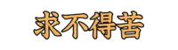 |
ぐふとくく、ぐふとっく |
仏教の八苦の一つ。求めているものが得られない苦しみ。 |
| Lv04_0160 |
|
おうよう |
ゆったりとしてこせこせしない様子。また、おっとりとして上品なこと。 |
| Lv04_0161 |
|
じょうとうく |
きまり文句のこと。 |
| Lv04_0162 |
|
つつじ |
ツツジ科ツツジ属の植物の総称。 |
| Lv04_0163 |
|
しめなわ |
神聖な場所を区切りとして引き渡す縄。神前に引き、新年の飾りとする。 |
| Lv04_0164 |
|
だかつ |
ヘビとサソリのこと。また、人が忌み嫌うものの例え。 |
| Lv04_0165 |
|
かたつむり |
陸棲の巻貝のうち、殻をもつものの総称。 |
| Lv04_0166 |
|
えず |
吐き気をもよおすこと。嘔吐反射。 |
| Lv04_0167 |
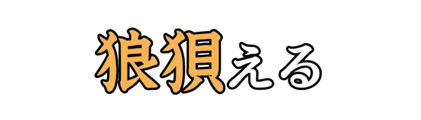 |
うろた |
思いがけない事に驚き、まごつく。 |
| Lv04_0168 |
|
ためら |
心が迷ってなかなか決心がつかない。 |
| Lv04_0169 |
|
ほふく |
腹ばいになって、手と足ではうこと。 |
| Lv04_0170 |
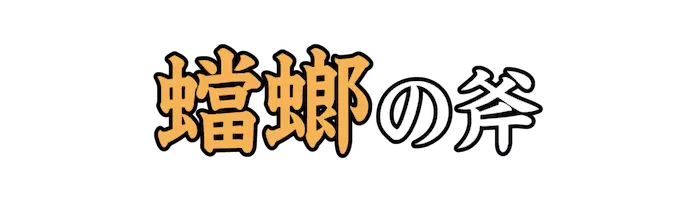 |
とうろう |
弱小のものが、自分の力量もわきまえず強敵に立ち向かうことのたとえ。 |
| Lv04_0171 |
|
くみ |
仲間になる。賛成する。 |
| Lv04_0172 |
|
でくわ |
たまたまばったりと出会うこと。 |
| Lv04_0173 |
|
かしま |
やかましい。そうぞうしい。 |
| Lv04_0174 |
|
にんにく |
恥を耐え忍んで、心を動かさないこと。 |
| Lv04_0175 |
 |
しな |
弾力があってよくしなうさま。 |
| Lv04_0176 |
|
せ |
流れをさえぎり止める。 |
| Lv04_0177 |
|
えびすがお |
えびすがにこやかに笑っているような顔。 |
| Lv04_0178 |
|
さきがけ |
物事のはじめとなること。 |
| Lv04_0179 |
 |
からくれない |
鮮やかな濃い紅の色のこと。 |
| Lv04_0180 |
|
しま |
お終いにする。 |
| Lv04_0181 |
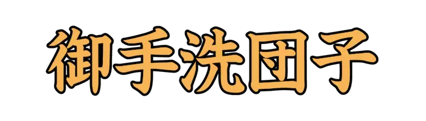 |
みたらしだんご |
米粉の団子を串に刺し、砂糖醤油のたれをからめた和菓子。 |
| Lv04_0182 |
|
あげつら |
あれこれと論ずる。 |
| Lv04_0183 |
|
たまげ |
非常に驚く。肝をつぶす。 |
| Lv04_0184 |
|
てっぷ |
差し迫った危急や困難のたとえ。轍の跡に溜まった水でフナが苦しむ様から。 |
| Lv04_0185 |
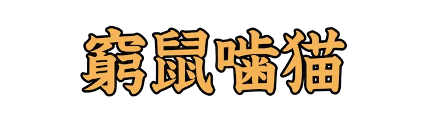 |
きゅうそごうびょう |
弱者も絶体絶命の窮地に追い込まれると、必死に抵抗し、反撃することのたとえ。 |
| Lv04_0186 |
|
しゅうちんぼん |
袖の中に入れて持ち歩けるほど小さな本。 |
| Lv04_0187 |
|
おきないんこ |
オウム目インコ科に分類される鳥。緑色の身体と前面の灰色の模様が特徴。 |
| Lv04_0188 |
|
おひれ、おびれ |
魚の尾とひれ。転じて、本筋以外についた余計なもの。 |
| Lv04_0189 |
 |
かたくちいわし |
ニシン目カタクチイワシ科の魚。上顎が動かず、下顎のみが動くことから。 |
| Lv04_0190 |
|
うれ |
よくないことが起こるのではないかと心配する。また、嘆き悲しむ。 |
| Lv04_0191 |
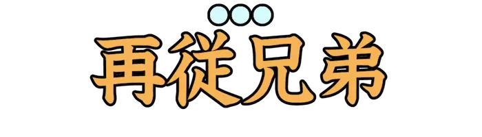 |
はとこ |
父母のいとこの子供。 |
| Lv04_0192 |
|
えじぷと |
中東、北アフリカに位置する共和制国家。首都はカイロ。 |
| Lv04_0193 |
|
ひしもち |
桃の節句に、雛人形を飾る際に一緒に供える菱形の餅。 |
| Lv04_0194 |
|
しょうぶ、そうぶ |
アヤメ科アヤメ属の多年草。 |
| Lv04_0195 |
|
うどんげ |
インドの想像上の植物。また、クサカゲロウが産みつけた卵。 |
| Lv04_0196 |
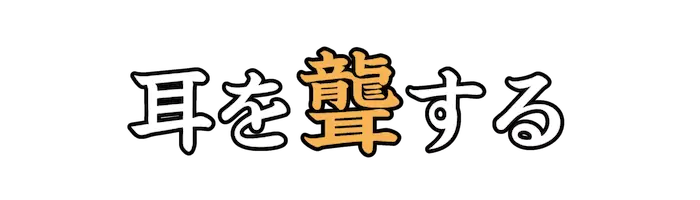 |
ろう |
大きな音をたてて、聞こえなくする。 |
| Lv04_0197 |
|
わりゅう |
くぼんだ所と盛り上がった所。盛衰。 |
| Lv04_0198 |
|
てはず |
物事をするため前もって行う準備や順序。 |
| Lv04_0199 |
|
はないちもんめ |
こどもの遊びのひとつ。二組にわかれ、メンバーのやりとりをする。 |
| Lv04_0200 |
 |
むさぼ |
飽きることなくほしがる。また、がつがつ食べる。 |
| Lv04_0201 |
|
みいら |
人為的および自然条件によって乾燥され、長期間原型を留めている死体のこと。 |
| Lv04_0202 |
|
くけいは |
非正弦波形の基本的な一種。電子工学や信号処理の分野で広く使われる。 |
| Lv04_0203 |
|
あおぎり |
アオイ科アオギリ属の落葉高木。 |
| Lv04_0204 |
|
せんだん |
センダン科センダン属の落葉高木。 |
| Lv04_0205 |
|
のれんがい |
百貨店で、老舗や有名店のテナントなどを集めた食品売り場。 |
| Lv04_0206 |
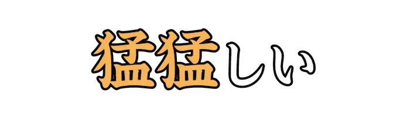 |
たけだけ |
勇ましく強い。また、悪い事をしていながら図々しい。 |
| Lv04_0207 |
|
おそ |
恐れる。心配する。 |
| Lv04_0208 |
|
た |
悪いものをよくする。 |
| Lv04_0209 |
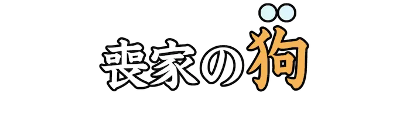 |
いぬ |
喪中で主人に餌を貰えずやせ衰えた犬。転じて、やつれて元気のない人のこと。 |
| Lv04_0210 |
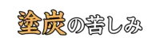 |
とたん |
泥水や炭火の中に落とされたかのような、きわめて苦しい境遇。 |
| Lv04_0211 |
|
にゅーよーく |
アメリカ合衆国の、ニューヨーク州にある同国最大の都市。 |
| Lv04_0212 |
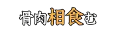 |
あいは |
血縁者同士が激しく争う。 |
| Lv04_0213 |
|
そば |
タデ科ソバ属の一年草。また、その種を製粉して作った麺料理。 |
| Lv04_0214 |
|
と |
離れ離れの物をつづり合わせる。 |
| Lv04_0215 |
|
かなづち |
つちの頭または全部を鉄で作ったもの。釘などを打ち込むのに使う。 |
| Lv04_0216 |
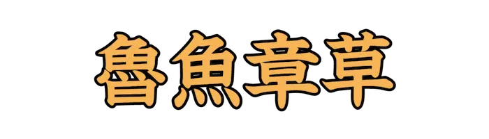 |
ろぎょしょうそう |
書き誤りやすい文字のこと。 |
| Lv04_0217 |
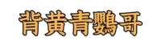 |
せきせいいんこ |
インコ科セキセイインコ属の鳥。 |
| Lv04_0218 |
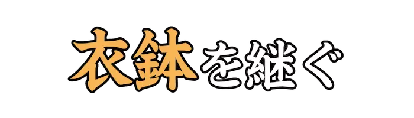 |
いはつ、えはつ |
先人の残したものを受け継ぐこと。『衣鉢』は弟子に授けられる奥義。 |
| Lv04_0219 |
|
れいてつ |
相手の姪を敬って言う語。『れいめい』は今のところ誤り。 |
| Lv04_0220 |
 |
しゅうちょう |
集団の中心となる者。また、未開人の部族や盗賊の長を指す。 |
| Lv04_0221 |
|
ひらかた |
大阪府の北河内地域に位置する市。北河内地域における中心的な衛星都市。 |
| Lv04_0222 |
|
ひろさき |
青森県西部に位置する市。日本で最初に市制を施行した都市の一つ。 |
| Lv04_0223 |
|
いといがわ |
新潟県の最西端に位置する市。世界有数かつ世界最古の翡翠の産地。 |
| Lv04_0224 |
|
しこつこ |
北海道千歳市にある淡水湖。日本最北の不凍湖。 |
| Lv04_0225 |
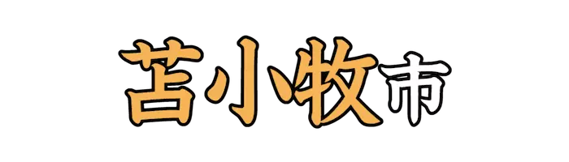 |
とまこまい |
北海道中南部に位置する計量特定市。ホッキ貝漁獲量が日本一。 |
| Lv04_0226 |
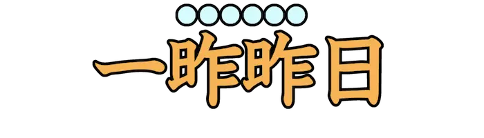 |
さきおととい、さきおとつい |
おとといの前の日。三日前の日。『一昨昨日(いっさくさくじつ)』とも。 |
| Lv04_0227 |
|
みょうが |
ショウガ科の宿根性の多年草。 |
| Lv04_0228 |
|
しゃもじ |
汁や飯などをすくうための木製などの道具。『杓子(しゃくし)』の女性語。 |
| Lv04_0229 |
|
あわび |
ミミガイ科の大型の巻貝の総称。 |
| Lv04_0230 |
|
けしか |
勢いづけて相手を攻撃させる。相手をおだてて自分の思うことをさせる。 |
| Lv04_0231 |
|
ひまわり |
キク科の一年草。花は黄色で、種は食用となる。 |
| Lv04_0232 |
|
くらげ |
刺胞動物のうち、淡水または海水中に生息し浮遊生活をする種の総称。 |
| Lv04_0233 |
 |
ふとん |
綿や羽毛などを布で平らにくるんだもの。寝具として使用する。 |
| Lv04_0234 |
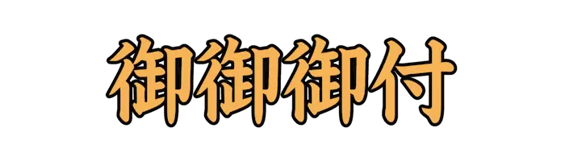 |
おみおつけ |
味噌汁の美化語。 |
| Lv04_0235 |
|
はまぐり |
マルスダレガイ科の二枚貝。食用として一般的な貝類の一つ。 |
| Lv04_0236 |
|
しつけ |
礼儀や作法などを教え込むこと。裁縫で、縫目が狂うのを防ぐための仮縫い。 |
| Lv04_0237 |
 |
おとぎばなし |
子供に聞かせる伝説、昔話。また、比喩的に、現実離れした空想的な話。 |
| Lv04_0238 |
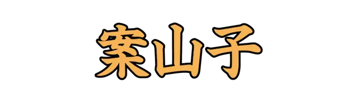 |
かかし、かがし |
竹やわらで作った人形。人に見せかけて、鳥などが作物を荒らすのを防ぐ。 |
| Lv04_0239 |
|
おとりそうさ |
対象者に犯罪の実行を働きかけ、犯罪が実行されるのを待つ捜査手法。 |
| Lv04_0240 |
|
どっちみち |
いずれにしても。どのようにしても。 |
| Lv04_0241 |
|
よこぐし |
櫛を斜めに、びんに挿すこと。 |
| Lv04_0242 |
|
うかい |
まわり道すること。遠まわりすること。 |
| Lv04_0243 |
 |
うおがし、さかながし |
魚市場のある河岸。また、魚市場。 |
| Lv04_0244 |
|
にわかあめ |
急に降りだしてまもなくやんでしまう雨。 |
| Lv04_0245 |
|
いけす |
魚を生きたままにしておくための水の入った入れ物。 |
| Lv04_0246 |
|
のんき |
性格や気分がのんびりとしていること。 |
| Lv04_0247 |
|
ぬるまゆ |
ぬるい湯。ぬるゆ。転じて、刺激や緊張のない境遇や生活。 |
| Lv04_0248 |
|
うどん |
小麦粉に少量の塩を加え、水でこね、薄く延ばして細く切ったものをゆでた食品。 |
| Lv04_0249 |
|
うこん |
ショウガ科の多年草。ターメリックとも。 |
| Lv04_0250 |
|
ひたむ、まむ |
一つの物事だけに心を向けているさま。また、まっすぐ正面を向いていること。 |
| Lv04_0251 |
|
まいな |
礼として物をおくる。 |
| Lv04_0252 |
|
いずく |
反語の意味で用いられる表現。漢文読み下しの用語。 |
| Lv04_0253 |
|
かぼちゃ、なんきん |
ウリ目ウリ科の一年草。皮を含む果実を食用とする。 |
| Lv04_0254 |
|
まぶた、まなぶた |
眼球をおおって開いたり閉じたりする皮膚。 |
| Lv04_0255 |
|
ちゃぶだい、しっぽくだい |
和室で用いる、足の短い食卓。 |
| Lv04_0256 |
|
いいなずけ、いいなづけ |
双方の親が、子供が幼いうちから結婚させる約束をしておくこと。 |
| Lv04_0257 |
|
かねづる |
金銭を得る、つてや手がかり。資金などを出してくれる人。 |
| Lv04_0258 |
|
いか、うぞく |
軟体動物門十腕形上目の動物の総称。八本の腕と二本の触腕が特徴。 |
| Lv04_0259 |
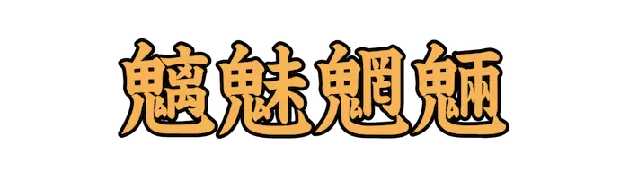 |
ちみもうりょう |
色々な種類の妖怪や化け物のこと。 |
| Lv04_0260 |
|
がんじがら |
ひもや縄などをいく重にも巻きつけて、厳重に縛ること。 |
| Lv04_0261 |
|
そろばん |
日本や中国で用いる計算器具。 |
| Lv04_0262 |
|
あんどん、あんどう |
小型の照明具。木枠などで紙を張り、中に油皿を置いて点灯するもの。 |
| Lv04_0263 |
|
みなり |
衣服をつけた姿。また、その服装。また、からだつき。 |
| Lv04_0264 |
|
ろうそく |
蝋を材料とした照明の火具。 |
| Lv04_0265 |
|
たんぱくしつ |
窒素を含む高分子の有機化合物。プロテイン。 |
| Lv04_0266 |
|
はにわ |
古墳の上または周囲に立て並べた素焼きの土製品。 |
| Lv04_0267 |
|
うずらまめ |
種皮の表面の模様がウズラの卵に似た、インゲンマメの一種。 |
| Lv04_0268 |
|
となかい、じゅんろく |
鯨偶蹄目シカ科の動物。シカ科で唯一、雌雄共に角がある。 |
| Lv04_0269 |
|
ふつつかもの |
芸事に明るくなかったり、粗相が多く気の回らない人物を表す語。 |
| Lv04_0270 |
|
ちょんまげ |
江戸時代、男子に行われた髪形の一。額髪をそりあげ、後頭部で髷を結ったもの。 |
| Lv04_0271 |
|
わがまま |
他人や周囲などの都合や事情を考えずに、自分勝手に振舞ったり発言したりすること。 |
| Lv04_0272 |
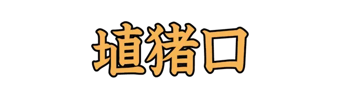 |
へなちょこ |
未熟な人や役に立たない人をあざけっていう語。 |
| Lv04_0273 |
 |
しゃも |
闘鶏用、観賞用、食肉用のニワトリの品種。国の天然記念物に指定されている。 |
| Lv04_0274 |
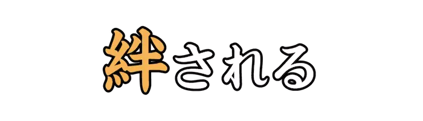 |
ほだ |
情に引きつけられて、心や行動の自由が縛られる。 |
| Lv04_0275 |
 |
きゃしゃ、かしゃ |
繊細で弱々しく感じられるさま。また、華やかなこと。はでで贅沢なこと。 |
| Lv04_0276 |
|
あぜみち |
田と田の間の細い道。 |
| Lv04_0277 |
|
いわゆる |
世間一般に言われる。俗に言う。よく言う。 |
| Lv04_0278 |
|
あく |
山菜や野草などに含まれる、渋みやえぐみのもとになる成分。 |
| Lv04_0279 |
|
おみき |
神前に供する酒。基本的には純米酒が供えられる。 |
| Lv04_0280 |
 |
はちめんろっぴ |
あらゆる方面にめざましい働きを示すこと。 |
| Lv04_0281 |
|
めかぶ、めかぶら |
わかめなど海藻の根の俗称。 |
| Lv04_0282 |
|
しあさって、みょうみょうごにち |
今日から数えて四日目。あさっての次の日。 |
| Lv04_0283 |
|
うるさ |
物音が大きすぎて耳障りである。やかましい。 |
| Lv04_0284 |
|
けばけば |
品格が無く派手なさま。 |
| Lv04_0285 |
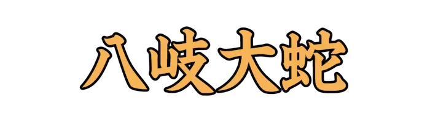 |
やまたのおろち |
日本神話に登場する、頭と尾が八つずつある巨大な蛇。 |
| Lv04_0286 |
|
けみ、えっ |
読む。目を通して調べる。また、年月を過ごす。経る。 |
| Lv04_0287 |
|
るつぼ、かんか |
物質を強く熱するのに用いる耐熱性の容器。転じて、激しく感情の昂った状態のたとえ。 |
| Lv04_0288 |
 |
はかな、くら |
束の間であっけないさま。また、はっきりしない。 |
| Lv04_0289 |
|
いさりび |
夜間、魚を集めるために漁船でたくかがり火。 |
| Lv04_0290 |
 |
きょうじん |
しなやかで強いこと。また、柔軟でねばり強いこと。 |
| Lv04_0291 |
|
なぞら、なずら |
ある物事を類似のものと比較して、仮にそれとみなす。擬する。 |
| Lv04_0292 |
|
たわ、たゆ |
ぴんと張っていたものがゆるむ。また、緊張がほぐれる。油断する。 |
| Lv04_0293 |
|
みみたぶ、みみたぼ |
耳の下に垂れ下がったやわらかな部分。 |
| Lv04_0294 |
|
まっち |
軸木につけた頭薬を摩擦によって発火させる道具。 |
| Lv04_0295 |
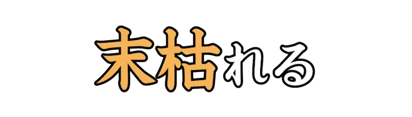 |
うらが、すが |
草木が盛りの季節を過ぎて枯れはじめる。 |
| Lv04_0296 |
|
のろし |
合図や警報のために、薪や火薬などを用いて高くあげる煙。 |
| Lv04_0297 |
|
にじます |
サケ目サケ科の魚。食用魚であり、養殖や釣りの対象にもなる。 |
| Lv04_0298 |
|
すみれいろ |
スミレの花のような、濃い紫色。 |
| Lv04_0299 |
|
くゆ、いぶ |
煙をゆるやかに立てること。また、よく燃えずに煙が出る。 |
| Lv04_0300 |
|
すが |
頼りとするものにつかまる。 |
| Lv04_0301 |
|
じなら |
地面の高低やでこぼこをなくし、平らにすること。 |
| Lv04_0302 |
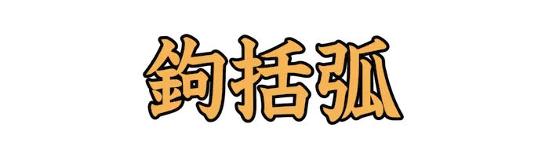 |
かぎかっこ |
文章表記中などで用いる鉤状の記号。 |
| Lv04_0303 |
|
いさ |
主に目上の人に対して、その過ちや悪い点を指摘し、改めるように忠告する。 |
| Lv04_0304 |
|
ぎょうが |
あおむけに寝ること。 |
| Lv04_0305 |
|
そうしん、かまがみ |
かまどを守護する神。 |
| Lv04_0306 |
|
すだち |
ムクロジ目ミカン科の常緑低木、中高木。食用として多くは緑色の未熟果が使われる。 |
| Lv04_0307 |
|
うまや、むまや |
馬を飼う小屋。 |
| Lv04_0308 |
|
ややおも |
競馬で、雨などによってターフに若干の水分を含んだ状態。 |
| Lv04_0309 |
|
すりこぎ |
すり鉢で、物をするのに用いる棒。 |
| Lv04_0310 |
|
つわもの |
武器をとって戦う人。兵士。軍人。また特に、非常に強い武人。 |
| Lv04_0311 |
|
いおん |
ある音符に付随し、それに先だって短く奏される音。『前打音(ぜんだおん)』とも。 |
| Lv04_0312 |
|
えいじ |
生まれたばかりの赤ん坊。四文字では『嬰児(みどりご)』とも。 |
| Lv04_0313 |
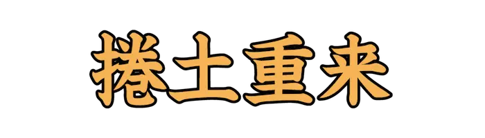 |
けんどちょうらい |
一度失敗した後に勢力を上げ、全力で巻き返してくること。 |
| Lv04_0314 |
|
みささぎ |
天皇や皇后などの墓所。 |
| Lv04_0315 |
|
こうそん、ごうそん |
使いへらしたり、使いつぶしたりすること。また、もののへること。消耗。 |
| Lv04_0316 |
 |
げげ |
仏教の僧が夏に行う、安居という修行が終わる時。 |
| Lv04_0317 |
|
じゃ |
ふざけたわむれる。また、まつわりついてたわむれる。 |
| Lv04_0318 |
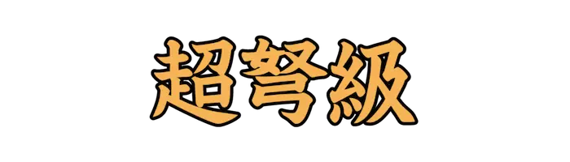 |
ちょうどきゅう |
同類のものよりはるかに強大であること。超弩級艦。 |
| Lv04_0319 |
|
れんこう |
長くつながりつづくこと。 |
| Lv04_0320 |
|
いささ |
ほんのすこし。わずか。 |
| Lv04_0321 |
|
わこう |
鎌倉末期から室町時代の武装商人、海賊的商人。 |
| Lv04_0322 |
|
がらんどう |
寺院で、伽藍神を祭ってある堂。転じて、広々としてがらんとしている状態。 |
| Lv04_0323 |
|
つと |
朝早く。早朝に。また、早くから。以前から。 |
| Lv04_0324 |
|
しぼ |
草花などが生気をなくしてしおれる。抱いていた期待が、勢いを失う。 |
| Lv04_0325 |
 |
どこそこ |
不定称の指示代名詞。ある場所を漠然とさし示していう。 |
| Lv04_0326 |
|
わる |
めでたくない。不吉である。縁起がわるい。 |
| Lv04_0327 |
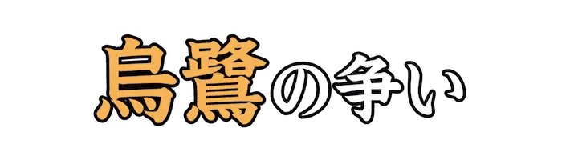 |
あくせく、あくさく |
細かいことを気にして、落ち着かないさま。 |
| Lv04_0328 |
|
つくだぶし |
江戸時代、隅田川筋の遊船などで流行した俗謡。 |
| Lv04_0329 |
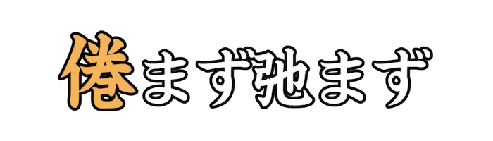 |
う |
飽きたりせず、怠けたりもせず。 |
| Lv04_0330 |
|
あぐ |
いくら攻撃しても効果があがらず、もてあます。 |
| Lv04_0331 |
|
けんちょう |
ひっかけてつるすこと。 |
| Lv04_0332 |
|
ひたすら |
ただそればかり。ひとむき。『只管打坐(しかんたざ)』とも。 |
| Lv04_0333 |
|
こうしょう |
旧陸海軍に所属し、兵器や弾薬などの軍需品を製造、修理した工場。 |
| Lv04_0334 |
|
あおくげ |
官位の低い公家。また、公家をいやしめていう語。 |
| Lv04_0335 |
|
ほんけがえ |
生まれた年の干支と同じ干支の年がまためぐり来ること。還暦。 |
| Lv04_0336 |
|
ひぞく |
徒党を組んで略奪、強盗などを行う盗賊。 |
| Lv04_0337 |
|
なか |
動作の禁止に用いる語。してはいけない。 |
| Lv04_0338 |
|
くぎ |
わかつ。 区分けする。 |
| Lv04_0339 |
|
こんじく |
大地の中心を貫き支えると想像される軸。地軸。 |
| Lv04_0340 |
|
いなが |
すわったまま。即座に。また、何もせずじっとして。 |
| Lv04_0341 |
|
な |
舌の先でなでるように触れる。また、かるく見なす。甘く見る。みくびる。 |
| Lv04_0342 |
|
よみ |
よしとしてほめたたえる。 |
| Lv04_0343 |
|
そったく |
禅宗で、師弟のはたらきが合致すること。また、逃したらまたと得がたい好機。 |
| Lv04_0344 |
|
まいる |
ヤード・ポンド法における長さの単位。 |
| Lv04_0345 |
 |
みはり |
見張ること。目を配って番をすること。 |
| Lv04_0346 |
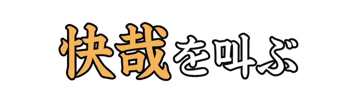 |
かいさい |
ああ愉快だと思うこと。胸がすくこと。 |
| Lv04_0347 |
|
ちんがいざい |
咳をしずめるための薬剤。 |
| Lv04_0348 |
|
ゆうじょう |
中国の城郭で、都市や村落全体を城壁で囲み門を設けて外部と通じるようにしたもの。 |
| Lv04_0349 |
|
うば |
『尉(じょう)と姥(うば)』。能の衣装を着た老夫婦が、松の落ち葉をかき寄せる姿。 |
| Lv04_0350 |
|
えんぺい |
おおい隠すこと。地球と恒星または惑星との間に月が入り、恒星や惑星を隠す現象。 |
| Lv04_0351 |
|
だこ |
唾を吐き入れるつぼ。たんつぼ。 |
| Lv04_0352 |
|
かた |
土がかわいて、しっかりとかたまっている。 |
| Lv04_0353 |
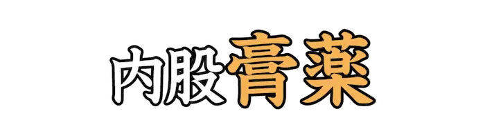 |
はとば |
港で、波止を築いた所。船着き場。 |
| Lv04_0354 |
|
かどだ |
かどが目立つ状態になる。とげとげしいようすになる。 |
| Lv04_0355 |
|
けわ、きび |
傾斜が急で、登るのに困難である。厳格で少しのゆるみも許さない。 |
| Lv04_0356 |
|
がが |
山や巌などのけわしくそびえ立つさま。 |
| Lv04_0357 |
|
しばしば |
同じ事が何度も重なって行われるさま。 |
| Lv04_0358 |
|
いさぎよ |
清らかですがすがしい。清浄である。 |
| Lv04_0359 |
 |
なだ |
泣いたり怒ったりしている者を、慰めたりおだてたりして機嫌を直させる。 |
| Lv04_0360 |
|
そうじゅ |
宋代の儒者の総称。 |
| Lv04_0361 |
|
しし |
つとめ励むさま。 |
| Lv04_0362 |
|
ふっそ |
原子番号9の元素。元素記号はF。 |
| Lv04_0363 |
|
ほうちょう |
料理に使用する刃物。『包丁(ほうちょう)』とも。 |
| Lv04_0364 |
|
そんげん |
やさしい言葉。へりくだっていう言葉。 |
| Lv04_0365 |
|
わくもん |
文章の形式のひとつ。仮にある質問を設け、それに答える形で自分の意見を述べるもの。 |
| Lv04_0366 |
|
さと |
理解、判断が的確で早い。賢い。 |
| Lv04_0367 |
|
ゆゆ、いよいよ |
憂えるさま。また、ますます。 |
| Lv04_0368 |
|
じゃっき |
事件、問題などをひきおこすこと。 |
| Lv04_0369 |
|
もだ |
苦痛などのあまりからだをよじる。思いわずらって苦しむ。 |
| Lv04_0370 |
|
とんぼく |
人情があつく、正直で飾らないこと。 |
| Lv04_0371 |
|
すべ |
全部で。合計して。なべて。 |
| Lv04_0372 |
|
おも |
心を集中してよく考える。 |
| Lv04_0373 |
|
てんもうかいかい |
悪い事をすれば必ず天罰が下ること。 |
| Lv04_0374 |
|
ゆるが |
心をゆるめる。おろそかにする。 |
| Lv04_0375 |
|
つよ |
力がある。がっちりしている。 |
| Lv04_0376 |
|
こちょうらん |
キジカクシ目ラン科の多年草。フィリピンから台湾にかけて分布する。 |
| Lv04_0377 |
|
すりこ |
染料をすりこむこと。また、染料をすりこんであるもの。 |
| Lv04_0378 |
|
はそう |
爪でかくこと。『掻爬(そうは)』とも。 |
| Lv04_0379 |
|
ゆうじょう |
両手を前で組み合わせて、会釈をすること。また、天子の位を譲ること。禅譲。 |
| Lv04_0380 |
|
はや、はしこ |
機転がきき、動作が敏捷である。 |
| Lv04_0381 |
|
おさ、かんが |
逃げないよう、しっかりつかまえる。また、物事を押さえて調べる。よく考える。 |
| Lv04_0382 |
|
えいこうだん |
弾道がわかるよう光を発しながら飛ぶ弾丸。 |
| Lv04_0383 |
|
さら、さぼ |
避けることができないむずかしい事態に身を置く。 |
| Lv04_0384 |
|
さか |
明るく勢いのよいさま。さかえ輝いているさま。 |
| Lv04_0385 |
|
おてんば |
少女や若い娘が、つつしみなく活発に行動すること。 |
| Lv04_0386 |
 |
か |
こう。この通りに。かように。 |
| Lv04_0387 |
|
せきふ |
木の伐採や打ち割り、削平などに使う石の刃物。 |
| Lv04_0388 |
|
めぐ、つかさど |
くるりとまわる。円を描いてまわる。また、管理する。支配する。 |
| Lv04_0389 |
|
がんぴし |
ガンピの靭皮繊維を原料とした和紙。 |
| Lv04_0390 |
|
かくはん、こうはん |
かき回すこと。かきまぜること。 |
| Lv04_0391 |
|
ぶいく |
いつくしみ育てること。愛し養うこと。 |
| Lv04_0392 |
|
よ |
ねじって互いに巻きつくようにする。 |
| Lv04_0393 |
|
ささもく |
杉の大径木にみられ、笹の葉が折り重なったような先の尖ったギサギサ模様の木目。 |
| Lv04_0394 |
|
しゃく |
すくう。しゃくる。 |
| Lv04_0395 |
|
かさ |
ある物の上に、それと同類の物が載る。幾重にも層をなす。 |
| Lv04_0396 |
|
くすのき |
クスノキ目クスノキ科の常緑高木。古くから各地の神社などに植えられている。 |
| Lv04_0397 |
|
たてざ |
南天の小星座。鷲座の南西、天の川の中にある。 |
| Lv04_0398 |
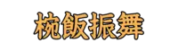 |
おうばんぶるまい |
椀飯の儀礼の影響を受けた江戸時代の正月の行事。 |
| Lv04_0399 |
|
むくどり |
スズメ目ムクドリ科の鳥。 |
| Lv04_0400 |
|
くぼ |
周囲より低く落ち込む。へこむ。また、うずもれる。おちぶれる。零落する。 |
| Lv04_0401 |
|
やなせ |
木や竹をすのこ状に組み上げた罠をしかけてある瀬。 |
| Lv04_0402 |
|
かじばしら |
舟の梶を仮に柱としたもの。 |
| Lv04_0403 |
|
きんもくせい |
シソ目モクセイ科の常緑小高木。秋に<橙黄色|とうこうしょく>の花を咲かせ、甘い香りを放つ。 |
| Lv04_0404 |
|
びしゃもん |
仏法守護の神。財宝を施す神として施財天ともいわれる。 |
| Lv04_0405 |
|
がたひし |
仏語で、自分と他人、あれとこれと、物事が対立して決着しないこと。 |
| Lv04_0406 |
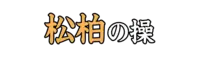 |
しょうはく |
逆境で苦しい状況でも、信念や志を貫くことのたとえ。 |
| Lv04_0407 |
|
やぐら |
屋敷の防御のために門の上に置かれ、偵察と防御の両面で使えるようにした建物。 |
| Lv04_0408 |
 |
れんごく |
カトリックの教理で、天国と地獄の間にある生前の罪を清める場所。 |
| Lv04_0409 |
|
りんきん、りんちん |
バラ科の落葉高木。中国で、木に多く鳥を呼び集めたことから。 |
| Lv04_0410 |
|
ひがき |
桧の薄板を網代組みにした垣。 |
| Lv04_0411 |
|
とろ |
固まっていた物が溶けて軟らかくなる。また、液状になる。 |
| Lv04_0412 |
|
かばちゃいろ |
樺色をおびた茶色。茶褐色。 |
| Lv04_0413 |
|
いびつ |
物の形がゆがんでいるさま。また、物事の状態が正常でないさま。 |
| Lv04_0414 |
 |
いつび |
ほめすぎること。過分の賞讃。過賞。 |
| Lv04_0415 |
|
きょかい |
盗賊などの首領。かしら。頭領。大親分。 |
| Lv04_0416 |
|
りんぱせつ |
体全体にある免疫器官のひとつ。細菌やウイルスなどを確認する器官。 |
| Lv04_0417 |
|
こころもと |
頼りなく不安で、心が落ち着かないさま。 |
| Lv04_0418 |
|
あやか |
影響を受けて同様の状態になる。感化されてそれと同じようになる。 |
| Lv04_0419 |
|
かいり、のっと |
海面上および航海上の距離の単位。また、船の速さを示す単位。 |
| Lv04_0420 |
|
ね |
堅い物、粗い物を、こねたりたたいたりすったりして、柔らかくきめ細かにする。 |
| Lv04_0421 |
|
に |
水やだし汁など液体の中に食材を入れて火を通し、調味する。 |
| Lv04_0422 |
|
だんきょう、たんきょう |
急流のひびき。 |
| Lv04_0423 |
|
かんがい |
農作物の生育に必要な水を、水路を引くなどして供給し、耕作地をうるおすこと。 |
| Lv04_0424 |
|
あなど |
相手を軽く見てばかにする。みくびる。 |
| Lv04_0425 |
|
じゅじゅん |
しっとりとうるおうこと。 |
| Lv04_0426 |
|
でんぷんのり |
澱粉を使用した接着剤の一種。 |
| Lv04_0427 |
|
こしあん |
小豆などをゆでて漉し、皮を取り去った後、砂糖を混ぜて煮て練った餡。 |
| Lv04_0428 |
|
はか |
工夫して計略をめぐらす。くわだてる。また、いつわる。 |
| Lv04_0429 |
|
みだ |
驚いたり慌てたりして取り乱す。狼狽する。 |
| Lv04_0430 |
|
けんぎゅうせい |
鷲座の首星アルタイルの漢名。 |
| Lv04_0431 |
|
こっぱい、かるた |
遊びや博打に用いる札。また、獣骨で作った麻雀の牌。 |
| Lv04_0432 |
|
しょくじん |
ろうそくのもえさし。 |
| Lv04_0433 |
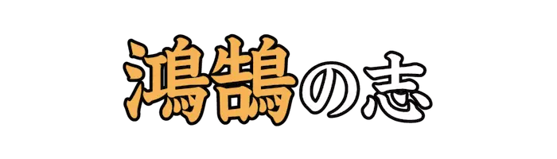 |
えんじゃく |
ツバメ、スズメのような小さな鳥。 |
| Lv04_0434 |
|
こ |
痩せて肉が落ちる。 ひどく痩せて骨張る。 |
| Lv04_0435 |
|
ひっぷ |
ひとりの男。庶民の男。 |
| Lv04_0436 |
|
しじょうなわて |
大阪府の北河内地域に位置する市。遺跡や貝塚跡が多い地で知られる。 |
| Lv04_0437 |
|
こしき |
古代中国を発祥とする、米などを蒸すための土器。 |
| Lv04_0438 |
|
めでた |
喜ばしい。祝うべき状態である。 |
| Lv04_0439 |
|
けいしゃ |
石英を成分とする砂。 |
| Lv04_0440 |
|
えいだつ |
袋にいれた錐の先がつき抜け出るように、才能が群を抜いて秀でること。 |
| Lv04_0441 |
|
さいわ |
運がよくて恵まれ、満足できる状態。 |
| Lv04_0442 |
|
ぎだりん |
祇園精舎の異称。 |
| Lv04_0443 |
 |
きかん |
きびしい寒さ。酷寒。 |
| Lv04_0444 |
|
あらがね |
山から掘り出したままの、まだ精錬されていない金属。 |
| Lv04_0445 |
|
わだかま |
複雑に入り組んでいる。また、輪状に曲がって巻いている。 |
| Lv04_0446 |
|
たいせい |
石うすでとんとんとつく音。 |
| Lv04_0447 |
|
さまた |
じゃまをする。じゃまをしてとめる。 |
| Lv04_0448 |
|
はざま |
石のごろごろしている谷あい。 |
| Lv04_0449 |
|
ちんぷ |
切るとき下におく台と斧。刑罰の道具。 |
| Lv04_0450 |
|
かねこうばい |
建築で、四五度の傾斜のこと。 |
| Lv04_0451 |
|
がさんび |
脱皮直前の頭部をもたげたカイコのような、湾曲した太くたくましい眉。 |
| Lv04_0452 |
|
みのかさ、さりゅう |
雨雪をしのぐために、みのをまとい、かさをかぶること。また、みのとかさ。 |
| Lv04_0453 |
|
からくしげ |
櫛を入れておく美しい小箱。 |
| Lv04_0454 |
|
おいま |
人の死を忌んでいう語。 |
| Lv04_0455 |
|
じくがく |
仏教についての学問。 |
| Lv04_0456 |
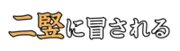 |
にじゅ |
病気、病魔におかされる。 |
| Lv04_0457 |
|
かまど |
尊くても非力な者に媚びるより、低い位の権力者の機嫌をとる方が得策というたとえ。 |
| Lv04_0458 |
|
いわや |
岩壁に自然にできた洞穴。 |
| Lv04_0459 |
|
あき、とき |
秋。収穫物をとり集めるとき。また、たいせつなとき。 |
| Lv04_0460 |
|
はいし |
昔、中国で稗官が集めて記録した民間の物語。転じて、広く小説をいう。 |
| Lv04_0461 |
|
ち |
先がすり切れる。先がすれてへる。 |
| Lv04_0462 |
|
かほんか |
イネ科の旧称。イネやムギ、タケなどを含む。 |
| Lv04_0463 |
|
ちゅうたい、じゅうたい |
二つを結びつける役割をなしているもの。社会をつくりあげている条件。 |
| Lv04_0464 |
|
ふんぞうえ |
不要になったぼろ裂を洗い清め、重ね合わせて縫い綴った袈裟。 |
| Lv04_0465 |
|
さけかす、さかかす |
もろみから清酒を絞ったあとのかす。 |
| Lv04_0466 |
|
ぞくさんおう、そくさんおう |
きわめて小さな国の王。 |
| Lv04_0467 |
|
かゆばら |
かゆを食べた腹の感じ。かゆばかり食べて、力のない腹。 |
| Lv04_0468 |
|
はろう |
もてあそぶこと。 おもちゃにすること。 |
| Lv04_0469 |
|
のぶと |
甚だ横着である。大胆である。 |
| Lv04_0470 |
|
べらぼう |
程度がひどいこと。はなはだしいこと。 |
| Lv04_0471 |
|
ちりとり |
掃き集めたちりやごみをすくいとる道具。 |
| Lv04_0472 |
|
つくば |
日本の関東地方東部、茨城県つくば市北端に位置する山。 |
| Lv04_0473 |
|
がんか |
眼球の収まる頭蓋骨のくぼみ。 |
| Lv04_0474 |
|
あばら |
背骨から体の両側に湾曲して胸骨につき、内臓を保護している骨。 |
| Lv04_0475 |
|
ちょうこく |
国をひらきはじめること。 |
| Lv04_0476 |
|
しか、しこう |
そうして。そうであるから。 |
| Lv04_0477 |
|
げんよう |
名誉や名声を得ようとして、盛んに自らを誇示すること。 |
| Lv04_0478 |
|
がんみ |
食物をよく噛んで味を味わうこと。表された意味や内容を理解し味わうこと。 |
| Lv04_0479 |
|
まつ、まと |
関連がある。深く関係している。また、そばについていて離れない。 |
| Lv04_0480 |
|
へんさん |
いろいろの原稿や材料を集めて整理し、書物の内容をつくりあげること。 |
| Lv04_0481 |
|
しろぎぬ |
白い絹。 |
| Lv04_0482 |
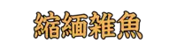 |
ちりめんじゃこ、ちりめんざこ |
カタクチイワシの稚魚を煮て干したもの。 |
| Lv04_0483 |
|
ひかんざくら |
バラ科の野生種のサクラ。『ガンジツザクラ』とも。 |
| Lv04_0484 |
|
けんちゅう |
ヤママユガ科の一種であるサクサンの糸で織った絹織物。 |
| Lv04_0485 |
|
かるかや |
出家した武士、苅萱道心とその息子石道丸にまつわる物語。 |
| Lv04_0486 |
|
じゅごん |
カイギュウ目ジュゴン科の哺乳類。亜熱帯、熱帯の浅く温かい海に生息する。 |
| Lv04_0487 |
|
ふなばた、ふなべり |
船の左右のふち。 |
| Lv04_0488 |
|
ふ |
腹ばいになる。または、横に寝る。 |
| Lv04_0489 |
|
ふく |
肥えているさま。ふっくらとしているさま。 |
| Lv04_0490 |
|
こ |
肉に脂肪がついて太る。また、土地の地味が豊かになる。 |
| Lv04_0491 |
|
こうちょう |
刺胞動物と有櫛動物をまとめた動物のグループ。 |
| Lv04_0492 |
|
ここう |
ももとひじ。転じて、手足となって働く、君主が最もたよりとする家臣。 |
| Lv04_0493 |
|
かこう |
よいさかな。うまい御馳走。 |
| Lv04_0494 |
 |
ぶどう |
ブドウ科の蔓性落葉低木の総称。『蒲萄(ぶどう)』とも。 |
| Lv04_0495 |
|
ぼだいじゅ |
アオイ科の落葉高木。『コバノシナノキ』とも。 |
| Lv04_0496 |
|
みずばしょう |
サトイモ科ミズバショウ属の多年草。 |
| Lv04_0497 |
|
あかね、せんそう |
アカネ科のつる性多年生植物。根は茜色で、草木染めの原料になる。 |
| Lv04_0498 |
|
つたうるし |
ウルシ科のつる性植物。各地の山間に見られる。 |
| Lv04_0499 |
|
ふうようてきか、ふうようてっか |
カエデの葉やオギの花。『秋索索(あきしつしつ)』と続く。 |
| Lv04_0500 |
|
おと |
虎のこと。 |
| Lv04_0501 |
|
きざ |
芽ばえ。 物事が起ころうとするしるし。前兆。 兆候。 |
| Lv04_0502 |
|
やわ |
力がぬけてだらしない。じわじわとしている。 |
| Lv04_0503 |
|
いばら |
とげのある低木の総称。 |
| Lv04_0504 |
|
おう |
苧の繊維をよりあわせて糸を紡ぐこと。 |
| Lv04_0505 |
 |
さいな |
つらく当たって苦しめる。 いじめる。 |
| Lv04_0506 |
|
ふようほう |
富士山の雅称。 |
| Lv04_0507 |
|
はちす |
ハスの茎や葉からとれるという糸。極楽往生の縁を結ぶとされる。 |
| Lv04_0508 |
|
しとみど |
板戸の一種。木格子に板を張った釣り戸のこと。 |
| Lv04_0509 |
|
けいよく |
心に思うことをつつみ隠さずに、主君に申し上げること。 |
| Lv04_0510 |
|
もうこはん |
生後一週から一ヶ月ころまでに、赤子のお尻や腰にできる青あざ。 |
| Lv04_0511 |
|
しゅうしゅうか |
美術品、骨董品などを、趣味や研究として特定の分野の物を集める人。 |
| Lv04_0512 |
|
まきいし |
茶室の庭などに蒔き散らしたように所々に置く石。 |
| Lv04_0513 |
 |
あさぎ |
緑がかった薄い藍色。 |
| Lv04_0514 |
|
かやぶ |
屋根材に茅を用いた屋根。 |
| Lv04_0515 |
|
おはぎ |
お彼岸の際に食べられる和菓子のひとつ。餡やきな粉が餅の外側についている。 |
| Lv04_0516 |
|
とうまちくい |
多くの物が群がって入り乱れるさま。 |
| Lv04_0517 |
|
ひょうもんだこ |
ヒョウモンダコ属の四種類のタコの総称。猛毒のテトロドトキシンを含む。 |
| Lv04_0518 |
|
まぐろ |
スズキ目サバ科マグロ属の魚の総称。世界各地で食用魚として漁獲されている。 |
| Lv04_0519 |
|
ぶんぼう |
取るに足りない技能のたとえ。 |
| Lv04_0520 |
|
ふじばかま |
キク科の多年生植物。秋の七草のひとつ。 |
| Lv04_0521 |
|
わらこんしき |
結婚二年目を意味する語。綿や藁のようにまだしっかりと固まっていないことから。 |
| Lv04_0522 |
|
きゃらぶき |
蕗の茎を醤油、酒などできゃら色に煮つめた料理。 |
| Lv04_0523 |
|
はんしょく |
動物や植物がどんどん新しく生まれ出てふえていくこと。 |
| Lv04_0524 |
|
おしべ、ゆうずい |
種子植物の雄性生殖器官。花糸およびやくから成り、花粉を生ずる。 |
| Lv04_0525 |
|
たた |
みずからほこるさま。いい気になっているさま。 |
| Lv04_0526 |
|
わか |
思いきって別れを告げる。いとまごいする。また、死別する。 |
| Lv04_0527 |
|
きくじん |
罪を調べ問いただすこと。 |
| Lv04_0528 |
|
のぞきいろ |
極めて淡い青色。 |
| Lv04_0529 |
|
ごずめず |
仏教で、頭が牛や馬の形をし、からだは人である地獄の獄卒。 |
| Lv04_0530 |
|
いかだ |
木材や竹をつるなどでつないで、水上に浮かべるもの。 |
| Lv04_0531 |
|
からすがい |
イシガイ目イシガイ科の二枚貝。 |
| Lv04_0532 |
|
ほらがい |
ホラガイ科の巻貝の一種。貝殻は楽器として使用される。 |
| Lv04_0533 |
|
からだ、むくろ |
胴体のこと。また、しかばね。 |
| Lv04_0534 |
|
こせんきょう |
鉄道線路の上にまたがって設けた橋。 |
| Lv04_0535 |
|
はこふぐ |
フグ目ハコフグ科の魚。肉は無毒で、食用にされる。 |
| Lv04_0536 |
|
せいしゃ |
罪におとすことをさし控える。ゆるす。 |
| Lv04_0537 |
|
びゅうけん |
まちがった考え。あやまった意見。 |
| Lv04_0538 |
|
いい |
わけ。意味。 |
| Lv04_0539 |
|
そし |
他人を悪く言う。非難する。 |
| Lv04_0540 |
 |
すわこ |
長野県岡谷市、諏訪郡下諏訪町、諏訪市にまたがる湖。 |
| Lv04_0541 |
|
ひよみのとり、こよみのとり |
酒のこと。また、部首のひとつ。『鳥』『隹』と区別していう語。 |
| Lv04_0542 |
|
やそきょう |
キリスト教。 |
| Lv04_0543 |
|
おうま |
夕方の薄暗い時。たそがれ。『大禍時(おおまがとき)』とも。 |
| Lv04_0544 |
|
とど |
滞在する。逗留する。 |
| Lv04_0545 |
|
は |
手足を地面、床などにつけて進む。腹這いになって進む。 |
| Lv04_0546 |
|
かしょうぶつ |
過去七仏の第六番目に世に出た仏。釈迦の直前に出現した仏。 |
| Lv04_0547 |
|
さまで |
そんなにまで。さほどには。あとに打ち消しの語を伴う。 |
| Lv04_0548 |
|
とお、うと |
まわり遠いこと。また、世間の事情などにうとく、実用に向かないさま。 |
| Lv04_0549 |
|
かなぐつわ、かねぐつわ |
金属製のくつわ。また、口止めとして渡す金銭。 |
| Lv04_0550 |
|
とどろ |
音が響きわたる。鳴り響く。 |
| Lv04_0551 |
|
みやまくわがた |
甲虫目クワガタムシ科の昆虫。ほぼ日本全土に分布している。 |
| Lv04_0552 |
|
でんぎょ |
ナマズのこと。 |
| Lv04_0553 |
|
のこぎりくず、のこくず |
のこぎりで材木などを挽くときに出るくず。また、よどみなく論説するさまのたとえ。 |
| Lv04_0554 |
 |
じょれん |
水を含んだ砂や泥の除去、またはそれらに生息する魚介類を捕獲する道具。 |
| Lv04_0555 |
 |
さかほこ |
『天(あま)の逆鉾(さかほこ)』。日本の中世神話に登場する矛。 |
| Lv04_0556 |
|
かねたいこ |
『鉦(かね)や太鼓(たいこ)で捜(さが)す』。大勢で大さわぎして方々を捜し歩く。 |
| Lv04_0557 |
|
とっこしょ、どっこしょ |
古代インドで使われた武器。密教では煩悩を打ち砕く意味で用いられる。 |
| Lv04_0558 |
 |
くしろ、うでわ |
古代の腕輪。貝や石、青銅、鉄などで作る。 |
| Lv04_0559 |
|
くぎかすがい |
物事が離れないようにつなぎとめるもの。 |
| Lv04_0560 |
|
かすみ |
たなびいて山のふもとなどに白くぼうっと掛かる霧。 |
| Lv04_0561 |
|
こころぐま |
心にわだかまりがあること。 |
| Lv04_0562 |
|
だらにすけ |
陀羅尼を誦する時、睡魔を防ぐために僧侶が口に含んだ苦味薬。 |
| Lv04_0563 |
|
じゅんじつ |
太陽暦の二月二十九日のこと。四年に一度だけある。 |
| Lv04_0564 |
 |
ずくぜに、ずくせん |
江戸時代、銑鉄で鋳造した粗悪な鉄銭。 |
| Lv04_0565 |
|
かぶらや |
木やシカの角などで作った蕪の形のものを、先端につけた矢。 |
| Lv04_0566 |
|
すぐ |
普通よりまさっていること。 |
| Lv04_0567 |
|
はっく |
白い毛のウマ。 |
| Lv04_0568 |
|
がぎょ |
馬を自由に乗りこなすこと。また、自分の思うまま他人を使役すること。 |
| Lv04_0569 |
|
なじ |
悪い点、不満な点をことさら取りたてて責めて問い詰める。 |
| Lv04_0570 |
|
は |
走る。走らせる。また、遠くまで至らせる。 |
| Lv04_0571 |
|
もてな |
人を取り扱う。待遇する。あしらう。 |
| Lv04_0572 |
|
ふうさんろしゅく |
風にさらされて食事をし、露に濡れて野宿すること。 |
| Lv04_0573 |
|
てんつい |
ころげおちること。顛落。 |
| Lv04_0574 |
|
すっとんきょう |
突然、調子のはずれた声を出したり、または奇抜な言動をしたりするさま。 |
| Lv04_0575 |
|
もち |
もとめる。必要である。 |
| Lv04_0576 |
|
けいじつ、きょうじつ |
このごろ。日ごろ。 |
| Lv04_0577 |
|
むちう |
むちで打つ。転じて、励まして奮いたたせる。 |
| Lv04_0578 |
|
りざや |
売買によって得られる差額の利益金。 |
| Lv04_0579 |
|
からすとんび |
イカ、タコなどの口内にある、黒色半透明の器官。 |
| Lv04_0580 |
|
いりえわに |
クロコダイル科のワニ。河口や海岸にすみ、家畜や人をも襲う。 |
| Lv04_0581 |
|
うなぎ |
間口が狭くて奥行きの深い建物のたとえ。 |
| Lv04_0582 |
|
あじさし |
チドリ目カモメ科アジサシ亜科の鳥の総称。 |
| Lv04_0583 |
|
かじか、いなだ |
スズキ目カジカ科の魚。また、ブリの幼魚、コイ目ドジョウ科の魚。 |
| Lv04_0584 |
|
しゅもくざめ |
メジロザメ目のシュモクザメ科の魚。 |
| Lv04_0585 |
|
こうじきん、きくきん |
コウジカビ科の一群の子嚢菌。『麹(こうじ)かび』とも。 |
| Lv04_0586 |
|
じゃくそこう |
中国、五代における税の一つ。スズメやネズミの害による減り米を加徴する意。 |
| Lv04_0587 |
|
まゆずみ |
雲がたなびいたように見える美しい眉。 |
| Lv04_0588 |
|
さとうきび |
イネ科の多年草。砂糖の原材料のひとつ。 |
| Lv04_0589 |
|
つるくび |
徳利や花瓶、茶入れなどの、口が鶴の頸のように細長いもの。 |
| Lv04_0590 |
|
おおとり |
コウノトリのような大形の鳥。 |
| Lv04_0591 |
|
しぎ |
チドリ目シギ科の鳥の総称。 |
| Lv04_0592 |
|
ばら、あら |
まとまっていたものがばらばらになる。 |
| Lv04_0593 |
|
もみがら |
稲の実の外皮。籾米をついて玄米を得たあとの殻。 |
| Lv04_0594 |
|
しょげ |
失望し、または予期に反する事に出会って、元気がなくなる。 |
| Lv04_0595 |
|
さまよ |
あてもなく歩きまわる。また、迷って歩きまわる。 |
| Lv04_0596 |
|
ちゃぼ |
ニワトリの品種名。日本の天然記念物に指定されている。 |
| Lv04_0597 |
|
せいかん |
顔つきや態度に勇ましく鋭い気性が現れていること。 |
| Lv04_0598 |
|
うめ、すた |
痛さや苦しさのあまり、低い声をもらす。あえぐ。すためく。 |
| Lv04_0599 |
|
てこ |
弱い力で重たいものを動かしたり、微小な運動を大規模な運動に変換する道具。 |
| Lv04_0600 |
|
てきがいしん |
敵に対して抱く憤りや、争おうとする意気込み。 |
| Lv04_0601 |
|
いなご、ばった |
バッタ亜目バッタ科の昆虫。一部内陸地域では佃煮などで食用とする。 |
| Lv04_0602 |
 |
きし、ぎし |
物と物とがすれ合って、音を立てる。 |
| Lv04_0603 |
|
およ |
物事のだいたいのところ。大要。あらまし。 |
| Lv04_0604 |
|
ふらち |
道理にはずれていて、けしからぬこと。要領を得ないこと。埒のあかないこと。 |
| Lv04_0605 |
|
うつぶ |
うつぶせること。胸を下にして寝た状態。 |
| Lv04_0606 |
|
こいのぼり |
布または紙で、鯉の形に作ったのぼり。 |
| Lv04_0607 |
|
たた |
神仏や怨霊などが災いをする。何かが原因となって悪い結果が生じる。 |
| Lv04_0608 |
|
いず、ど |
いろいろな過程を経たうえでの結果。また、限定された中から選び出す語。 |
| Lv04_0609 |
|
きしめん |
平打ちのうどん。名古屋地方の名物。 |
| Lv04_0610 |
|
たむろ |
一つ所に大ぜいの人が集まる。 |
| Lv04_0611 |
|
とぼ |
わざと知らないふりをする。しらばくれる。 |
| Lv04_0612 |
|
けう |
めったにないこと。とても珍しいこと。 |
| Lv04_0613 |
|
あうん |
最初と最後。また、呼気と吸気。 |
| Lv04_0614 |
|
ままごと |
子供が玩具を使って炊事や食事などのまねごとをする遊び。 |
| Lv04_0615 |
|
とうがん |
スミレ目ウリ科のつる性一年草。淡泊な味わいで煮物料理などに使われる。 |
| Lv04_0616 |
|
つまず |
何かに足の先が突っかかって転びそうになること。 |
| Lv04_0617 |
|
はばた、はたた |
鳥などが両翼を広げて上下に動かす。 |
| Lv04_0618 |
|
どぶねずみ |
ネズミ目ネズミ科の動物。大型で、下水溝などに棲息する。 |
| Lv04_0619 |
|
えりまきとかげ |
有鱗目アガマ科の動物。危険を感じると襟状の皮膚を広げる。 |
| Lv04_0620 |
|
のぼ |
血が頭へのぼって、ぼうっとなる。興奮して理性を失う。血迷う。 |
| Lv04_0621 |
|
ほご、ほぐ |
約束などを破ること、無かったことにすること。 |
| Lv04_0622 |
|
そぼろ |
魚や肉などをほぐして、いり上げた食品。ぼろぼろに乱れているさま。 |
| Lv04_0623 |
|
かさば |
物のかさが増す。また、体積が大きくて場所をとる。 |
| Lv04_0624 |
|
つるはし |
堅い土を掘り起こすときなどに用いる鉄製の工具。 |
| Lv04_0625 |
|
やっかん |
条約や契約などに定められている個々の条項。 |
| Lv04_0626 |
|
ほこら |
神を祭った小さなやしろ。 |
| Lv04_0627 |
|
つね |
つめや指先で皮膚を強くはさんでひねる。 |
| Lv04_0628 |
|
ぼくとつ |
飾りけがなく、無口なこと。実直で素朴なこと。 |
| Lv04_0629 |
|
あぐら、こざ |
両ひざを左右に開き両足を組んで座ること。 |
| Lv04_0630 |
|
がまぐち |
口金のついた小銭入れ。 |
| Lv04_0631 |
|
あらが、はりあ |
従わないであらそう。抵抗する。逆らう。 |
| Lv04_0632 |
|
すね、はぎ |
膝からくるぶしまでの間の部分。 |
| Lv04_0633 |
|
きわど |
悪い事態になりそうな、危険な状態である。 |
| Lv04_0634 |
|
はしたがね |
ある額に達しない半端な金銭。ごくわずかな金銭。 |
| Lv04_0635 |
|
わすれなぐさ |
シソ目ムラサキ科の植物。野生化して各地に群生している。 |
| Lv04_0636 |
|
どよ |
響きわたる。大声を上げて騒ぐ。 |
| Lv04_0637 |
|
どくろ |
風雨にさらされて肉が落ち、むきだしになった頭蓋骨。 |
| Lv04_0638 |
|
つわり、おそ |
妊娠初期にみられる消化器系を中心とした吐き気、嘔吐、食欲不振などの症状。 |
| Lv04_0639 |
|
ねこそ |
根まですっかり抜き取ること。転じて、余さずすべてすること。 |
| Lv04_0640 |
|
いがぐり |
いがに包まれているままの栗。 |
| Lv04_0641 |
|
おだ |
うれしがることを言って、相手を得意にさせる。 |
| Lv04_0642 |
|
とげとげ |
表面などに、とげを多く蓄えているさま。また、幾分かの敵意や嫌悪を示すさま。 |
| Lv04_0643 |
|
ぜいじゃく |
もろくて弱いこと。 |
| Lv04_0644 |
|
たてし |
立ち回りの型を考案し、出演俳優に教える専門家。 |
| Lv04_0645 |
|
うなだ |
失望や悲しさ、恥ずかしさなどのために、力なく首を前に垂れる。 |
| Lv04_0646 |
|
つる |
連れ立つ。一緒に行動する。 |
| Lv04_0647 |
|
くすぐ、こそぐ |
むずむずして笑いたくなるような感じを起こさせる。 |
| Lv04_0648 |
|
かたず |
緊張して息を凝らしているときなどに口中にたまるつば。 |
| Lv04_0649 |
|
ひざまず |
地面や床などに膝をついて身をかがめる。 |
| Lv04_0650 |
|
さすら |
どこというあてもなく、また、定まった目的もなく歩きまわる。 |
| Lv04_0651 |
|
あごひげ |
下あごに生えるひげ。 |
| Lv04_0652 |
|
かつら、かずら |
頭にかぶったり付けたりするもの。また、草木の枝、花などで作った髪飾り。 |
| Lv04_0653 |
|
かじ、かぶ |
かたい物の端を歯でかむ。また、物事のほんの一部分だけを学ぶ。 |
| Lv04_0654 |
 |
つっかいぼう、つっかえぼう |
つっかえにする棒。戸などを開かないようにしたり、物が倒れないようにささえる棒。 |
| Lv04_0655 |
|
かっちゅう |
鎧や兜をはじめとする武具。 |
| Lv04_0656 |
|
しょくにんかたぎ |
自分の技能を信じて誇りとし、納得するまで念入りに仕事をする実直な性質。 |
| Lv04_0657 |
|
ごぼう、ごんぼ |
キク目キク科の多年草。根菜として食される。 |
| Lv04_0658 |
|
ありくい |
有毛目アリクイ亜目の動物。中南米の森林や草原地帯に棲息する。 |
| Lv04_0659 |
|
ざらめとう |
一粒一粒が大きい砂糖。純度が高い。 |
| Lv04_0660 |
|
やぶさめ |
日本で、馬上から鏑矢で的を射る射技。元来は年占の神事だった。 |
| Lv04_0661 |
|
ぼか |
輪郭や色の濃淡の境目をきわだたせないで、ぼんやりさせる。 |
| Lv04_0662 |
|
せいろ、せいろう |
木の枠の底に張った簀に食品をのせ、下から湯気を通す蒸し器。 |
| Lv04_0663 |
|
ふんどし、とうさぎ |
細長い布で局部を隠す布。下ばかま。 |
| Lv04_0664 |
|
つぼ |
つぼみをもつ。つぼみになる。 |
| Lv04_0665 |
|
しおり |
紙や布、革などで作り、書物の間に挟んで目印とするもの。 |
| Lv04_0666 |
|
ひなあられ |
あられを甘い砂糖で多い色をつけた和菓子。 |
| Lv04_0667 |
|
けんちんじる |
精進料理を起源とする、豆腐や野菜などの具が多く入った汁物の一種。 |
| Lv04_0668 |
|
うがいぐすり、そうやく |
うがいに用いる水薬。『含嗽剤(がんそうざい)』とも。 |
| Lv04_0669 |
|
つま |
生活ぶりなどがぜいたくでない。地味で質素である。 |
| Lv04_0670 |
|
すうせい |
物事の動向や成り行き。社会などの、全体の流れ。 |
| Lv04_0671 |
|
こんにゃく |
オモダカ目サトイモ科の多年草。食用とするためには毒抜き処理が必要。 |
| Lv04_0672 |
|
わさび、さんき |
フウチョウソウ目アブラナ科の多年草。薬味や調味料として使われる。 |
| Lv04_0673 |
 |
ぶりき |
薄い鋼板にすずをめっきしたもの。 |
| Lv04_0674 |
|
ちょうつがい |
開き戸や箱のふたなどを自由に開閉するために取り付ける金具。 |
| Lv04_0675 |
|
ししおどし |
田畑を荒らしにくる鳥や獣を追いはらうための装置。 |
| Lv04_0676 |
|
はんごうすいさん |
野外で、飯盒を使って飯などを炊くこと。 |
| Lv04_0677 |
|
なみだ |
眼球の上部にある涙腺から出る透明な液体。 |
| Lv04_0678 |
|
たわし |
わらやシュロの毛をたばねて作ったもので、物をこすって洗うのに使う道具。 |
| Lv04_0679 |
|
はたご |
旅人を宿泊させ、食事を提供する宿泊施設。 |
| Lv04_0680 |
|
かし |
不動産の取引で、借主や買主に心理的な抵抗が生じる恐れのあること。 |
| Lv04_0681 |
|
ういろう |
江戸時代、小田原名産の去痰の丸薬。また、米粉に黒砂糖をまぜて蒸した菓子。 |
| Lv04_0682 |
|
ごろね、うたた |
寝るしたくをしないで、そのまま横になって寝ること。 |
| Lv04_0683 |
|
わきま |
物事の違いを見分ける。弁別する。 |
| Lv04_0684 |
|
つつもたせ |
男女が手を組んで行う恐喝のこと。 |
| Lv04_0685 |
 |
かま |
あることに気を取られて、他のことをなおざりにする。 |
| Lv04_0686 |
 |
かみす |
茨城県最東南端に位置する市。鹿嶋市と鹿島臨海工業地帯を形成する。 |
| Lv04_0687 |
|
よなご |
鳥取県西部に位置する市。『山陰の大阪』とも呼ばれる。 |
| Lv04_0688 |
|
おにこうべ |
宮城県北西部、大崎市の北にある温泉群。荒雄岳の中腹から外輪山にかけて位置する。 |
| Lv04_0689 |
|
わらび |
埼玉県南東部に位置する市。全国の市の中で最も面積が狭い。 |
| Lv04_0690 |
|
はつかいち |
広島県西部に位置する市。日本三景の厳島が有名。 |
| Lv04_0691 |
|
おおむた |
福岡県最南端に位置する市。かつて三池炭鉱をもっていた。 |
| Lv04_0692 |
|
しばた |
新潟県北東部に位置する市。県下有数の良質な米の産地として知られる。 |
| Lv04_0693 |
|
あいら |
鹿児島県中央部に位置する市。タバコ栽培や養鶏、窯業などが盛ん。 |
| Lv04_0694 |
|
きんもち |
『西園寺公望(さいおんじきんもち)』。日本の公家、政治家、教育者。 |
| Lv04_0695 |
|
まつげ、しょうもう |
まぶたの縁に生えている毛。 |
| Lv04_0696 |
|
つま |
指先ではさむ。指先や箸などではさみもつ。 |
| Lv04_0697 |
|
がもう |
『蒲生氏郷(がもううじさと)』。戦国時代から安土桃山時代にかけての武将。 |
| Lv04_0698 |
|
めいそう |
目を閉じて心を静め、無心になったり想念を集中させたりすること。 |
| Lv04_0699 |
|
にじ、し |
液体が物にしみて広がる。また、液体がうっすらと出てくる。 |
| Lv04_0700 |
|
せきばら |
存在を示そうと、わざとせきをすること。 |
| Lv04_0701 |
|
へいきょ |
世間から引退し、家にこもっていること。隠居。 |
| Lv04_0702 |
|
かいたい |
胸のつかえ。わずかな心のわだかまり。また、きわめてわずかなこと。 |
| Lv04_0703 |
|
おんあんぽう |
身体の一部に温熱刺激を与える看護技術。 |
| Lv04_0704 |
|
ぎょくぜんか、はなしょうぶ |
キジカクシ目アヤメ科の多年草。数多くの系統が存在する。 |
| Lv04_0705 |
|
まっただなか |
まんなか。中心。また、真っ最中。 |
| Lv04_0706 |
|
みじろ |
身を動かすこと。みうごき。 |
| Lv04_0707 |
|
はふづく |
日本建築で、屋根の造り方の一つ。両端に破風を設けたもの。 |
| Lv04_0708 |
|
きゅうりゅうぶ |
人間が立っている時、胃の一番上の部分。『胃底部(いていぶ)』とも。 |
| Lv04_0709 |
|
はくせきれい |
スズメ目セキレイ科の小鳥。主に水辺、川、畑などに棲息する。 |
| Lv04_0710 |
|
あお |
酒などを一気に飲み干す。 |
| Lv04_0711 |
|
よんこままんが |
四つの画面で構成される漫画。 |
| Lv04_0712 |
|
く |
欲に駆られて正常な判断が奪われるたとえ。 |
| Lv04_0713 |
|
あんころもち |
小豆の餡の中にころがして、外側に餡をつけた餅。 |
| Lv04_0714 |
|
こいこく |
鯉の輪切りを入れて煮込んだ味噌汁。 |
| Lv04_0715 |
|
けいせい |
美人の色香におぼれて、城や国を傾け滅ぼすこと。 |
| Lv04_0716 |
 |
からす |
スズメ目カラス科の鳥の総称。鳥類の中では知能が非常に高いとされる。 |
| Lv04_0717 |
|
ひっきょう |
つまるところ。結局。 |
| Lv04_0718 |
|
すもも |
バラ目バラ科の落葉小高木。果樹として農園で栽培される。 |
| Lv04_0719 |
|
ちょうか |
魚釣りの成果。釣れた魚の量。また、その獲物。 |
| Lv04_0720 |
|
うゆう |
跡形もなくなる。特に、火災ですべてを失う。 |
| Lv04_0721 |
|
きょうごう |
基準とする本文に照らして、本文の異同を確かめること。 |
| Lv04_0722 |
|
いざよい |
陰暦十六日、またその夜。 |
| Lv04_0723 |
|
きょうじや |
書画の幅、また、ふすまやびょうぶなどの表具をする人。 |
| Lv04_0724 |
|
おくつき |
上代の墓のこと。また、そこから神道式の墓のこと。 |
| Lv04_0725 |
 |
えいぐ |
神仏や故人の像に供物をして祭ること。 |
| Lv04_0726 |
|
えきてい |
宮殿のわきの殿舎。皇妃、宮女のいる所。 |
| Lv04_0727 |
|
えんのう |
中国で、困窮を補うため人民に金銭や米穀を納入させ、官位、爵位などを与える制度。 |
| Lv04_0728 |
|
ちょっと |
わずか。また、少しの時間。 |
| Lv04_0729 |
|
いもがら、ずいき |
サトイモやハスイモなどの葉柄。 |
| Lv04_0730 |
|
いんかん |
戒めとすべき例は、ごく身近なところにあるものだというたとえ。 |
| Lv04_0731 |
|
さ |
飲み物やタバコを飲みかけて、途中でやめること。 |
| Lv04_0732 |
|
わめ、おめ |
大声で叫ぶ。大声をあげて騒ぐ。 |
| Lv04_0733 |
|
うちょく |
遠回りのようだが、実際には最も効果的な手段のこと。 |
| Lv04_0734 |
|
うらぼん |
祖先の冥福を祈る仏事。お盆。 |
| Lv04_0735 |
|
あまもよ、あめもよ |
今にも雨が降り出しそうな空模様。また、雨模様。 |
| Lv04_0736 |
|
うじゃく |
遠い先の心配ばかりして、身近な危険を考えないことのたとえ。 |
| Lv04_0737 |
|
こけ |
ばかにする。踏みつけにする。 |
| Lv04_0738 |
|
きらら |
珪酸塩鉱物の一種。きらきらと光ることから。 |
| Lv04_0739 |
|
なが |
とても長い間、会わないでいること。また、死に別れ。 |
| Lv04_0740 |
|
たいとう |
さえぎるものなどが無く、のびのびとしているさま。 |
| Lv04_0741 |
|
きゃはん |
脛の部分に巻く布、革でできた被服。 |
| Lv04_0742 |
|
はしゅき |
耕地に種子をまく機械の総称。種まき機。 |
| Lv04_0743 |
|
しだ |
シダ植物の総称。特に無性世代の胞子体を指す。 |
| Lv04_0744 |
|
ささめゆき |
季語で、こまかに降る雪。 |
| Lv04_0745 |
|
ごみばこ |
ごみを入れるための箱。 |
| Lv04_0746 |
|
くすだま |
端午の節供に、邪気を払い、不浄を避けるものとして柱や簾にかけたもの。 |
| Lv04_0747 |
|
むし |
つかんだりつまんだりして引き抜く。 |
| Lv04_0748 |
|
あまぎ |
雲や霧がかかってきて空が曇る。 |
| Lv04_0749 |
|
じょうろ |
植木などに水をやるのに使う道具。 |
| Lv04_0750 |
|
てっぺん、てんぺん |
頂上。兜の鉢の一番高いところ。また、上空、空の果て。 |
| Lv04_0751 |
|
ざんげばなし、さんげばなし |
自らの罪悪を悔いて、人にうちあけた話。うちあけ話。 |
| Lv04_0752 |
|
はりきょう |
ガラスの裏に水銀をひいてつくった鏡。 |
| Lv04_0753 |
|
あなすえ |
足の先。また、子孫。末裔。 |
| Lv04_0754 |
|
がちりん |
仏語で、心を寂静にして、本心は清浄完全な満月と等しいと観ずる法。 |
| Lv04_0755 |
|
つみれ |
魚肉のすりみに卵や小麦粉などを入れ、少しずつつみとって汁に入れて煮たもの。 |
| Lv04_0756 |
|
ますらお |
強く勇ましく、立派な男性。 |
| Lv04_0757 |
|
するめ |
イカの内臓を取り除き、素干しや機械乾燥などで乾燥させた加工食品。 |
| Lv04_0758 |
|
いわ |
言うよう。言うことには。 |
| Lv04_0759 |
|
おっそ |
鎌倉、室町幕府の職名。判決の過誤を救済する機関。 |
| Lv04_0760 |
|
まみ |
お目にかかる。許可を得て身分の高い人に会う。 |
| Lv04_0761 |
|
しゅんどう |
虫などがうごめくこと。転じて、取るに足りない者が策動すること。 |
| Lv04_0762 |
|
ふくさ |
本膳料理の饗の膳の略式料理。のちに会席料理として発達した。 |
| Lv04_0763 |
|
えし |
生体の一部の組織、細胞が死ぬこと。 |
| Lv04_0764 |
|
げいか |
高僧の敬称。また、各宗派の管長の敬称。 |
| Lv04_0765 |
|
ちょうかんず |
地表面を上空から斜めに見下ろしたようすを図に描いたもの。 |
| Lv04_0766 |
|
はつらん |
乱れた世の中を治め、正常な世に戻すこと。 |
| Lv04_0767 |
|
りかんりつ |
一定期間中に特定の疾患にかかった患者の、人口に対する比率。 |
| Lv04_0768 |
|
きょうとうほ |
橋を守るため築く堡塁。また、勢力拡大のよりどころ。足場。 |
| Lv04_0769 |
|
たの |
たよる。まかせる。 |
| Lv04_0770 |
 |
しろばかま |
商売や他人のことで忙しく、自分の時間がないこと。 |
| Lv04_0771 |
|
さいゆうほう |
数理統計学で、観測値から得られる確率を最大化する確率分布の母数を推定する手法。 |
| Lv04_0772 |
|
どば |
才能が乏しい者でも努力すれば、才能豊かな者に追いつくことができることのたとえ。 |
| Lv04_0773 |
|
さんじょう |
助力して、事をなしとげさせること。 |
| Lv04_0774 |
|
えんげつとう |
半月形をした中国の刀。半月刀。 |
| Lv04_0775 |
|
ふんうん、ふんぬん |
物事の入り乱れていること。事がもつれること。 |
| Lv04_0776 |
|
きょくせき |
おそるおそる歩くこと。『跼天蹐地(きょくてんせきち)』の略。 |
| Lv04_0777 |
|
せんゆ |
快癒。けがや病気がなおること。 |
| Lv04_0778 |
|
ほぼほぼ |
俗に『ほぼ』を強めていう語。ほとんど全部。 |
| Lv04_0779 |
|
せいかたんでん |
へそのすぐ下あたりのところ。 |
| Lv04_0780 |
|
ひ |
『延(ひ)いて』の意味を強めた語。ある物事がもととなり、その結果。 |
| Lv04_0781 |
|
しょっつるなべ |
しょっつるを使って魚や豆腐、野菜などを煮ながら食べる料理。 |
| Lv04_0782 |
|
えてこう |
猿を擬人化した言い方。 |
| Lv04_0783 |
|
だ |
演劇、演芸などで上演する作品や種目。 |
| Lv04_0784 |
|
つばめさりづき |
陰暦八月の異名。 |
| Lv04_0785 |
|
えんまむし |
甲虫目エンマムシ上科の昆虫の総称。動物の死骸や腐敗物に集まる習性がある。 |
| Lv04_0786 |
|
なか |
まんなか。中心。 |
| Lv04_0787 |
|
まさ |
当然すべきである。 |
| Lv04_0788 |
|
な |
すべて一様に。皆ひとしく。総じて。 |
| Lv04_0789 |
|
う |
手やつえなどで強い力でなぐる。 |
| Lv04_0790 |
|
かものはし |
単孔目カモノハシ科の動物。哺乳類で産卵する、特異な繁殖形態をとる。 |
| Lv04_0791 |
|
いまよういろ |
平安時代に流行した、鮮やかな紫味の紅色。 |
| Lv04_0792 |
|
つじごうとう |
夜間などに道に出て往来の人を襲い、金銭や品物を奪い取ること。 |
| Lv04_0793 |
|
しかくごうま |
漢字の四隅の形により十種類の数を定め、四桁の数字にして探しやすくした検索法。 |
| Lv04_0794 |
|
そむ |
さからう。反逆する。 |
| Lv04_0795 |
|
まやふとう |
兵庫県神戸市灘区の町名のひとつ。現在は突堤の間が埋め立てられている。 |
| Lv04_0796 |
|
こうこうや |
人のいいおやじ。やさしくて気のいい老人。 |
| Lv04_0797 |
|
かるわざ |
見る人を驚かすような危険な動作を、身軽に演ずるわざ。 |
| Lv04_0798 |
|
せきしめいじん |
大学者や名声の高い人。偉大な徳のある人や人望のある人。 |
| Lv04_0799 |
|
よそみ |
よそを見ること。わきみ。よそめ。また、見て見ぬふりをすること。 |
| Lv04_0800 |
|
つむじ、つじげ |
毛が渦巻き状に生えているところ。 |
| Lv04_0801 |
|
むるいとびきり |
ほかに類のないほどすぐれていること。極上であること。 |
| Lv04_0802 |
|
おもんばか、おもんぱか |
周囲の状況などをよくよく考える。思いめぐらす。 |
| Lv04_0803 |
|
そよかぜ |
そよそよと吹く風。 |
| Lv04_0804 |
|
よもやまばなし |
いろいろな話題の話。世間話。 |
| Lv04_0805 |
|
はんぺん |
魚肉をすりつぶし、ヤマノイモなどを加えて蒸した、練り製品のひとつ。 |
| Lv04_0806 |
|
いにしえ |
過ぎ去った古い時代。過ぎ去った月日。 |
| Lv04_0807 |
|
きなくさ |
こげくさい。また、争いなど、危険なことが起こりそうな様子。 |
| Lv04_0808 |
|
さお |
ある物事を、機に乗じて思いどおりに順調に進めることのたとえ。 |
| Lv04_0809 |
|
げきりん |
実力者や目上の人のひどい怒りを買うこと。 |
| Lv04_0810 |
|
しょり |
国の滅亡を嘆き悲しむこと。『麦秀黍離(ばくしゅうしょり)』とも。 |
| Lv04_0811 |
|
あきあかね |
トンボ目トンボ科の昆虫。俗に『赤とんぼ』と呼ばれる。 |
| Lv04_0812 |
|
こえぞぜみ |
カメムシ目セミ科の昆虫。胸部背面にＷ字型の黄色の斑紋がある。 |
| Lv04_0813 |
|
とげかめむし |
カメムシ目カメムシ科の昆虫。肩部が張りだしてとがっている。 |
| Lv04_0814 |
|
ねきとんぼ |
トンボ目トンボ科の昆虫。翅の基部が橙色をしていることに由来する。 |
| Lv04_0815 |
|
まいまいかぶり |
甲虫目オサムシ科の昆虫。森林などに棲息し、春から秋まで見られる。 |
| Lv04_0816 |
|
いかりもんが |
チョウ目イカリモンガ科の昆虫。花などに留まり、蝶のように昼行性である。 |
| Lv04_0817 |
|
あかうしあぶ |
ハエ目アブ科の昆虫。山地の渓流沿いや、森林などに生息する。 |
| Lv04_0818 |
|
しまばえ |
双翅目シマバエ科の昆虫。雑木林や水辺に多く棲息する。 |
| Lv04_0819 |
|
うじむし |
ハエやハチなどの幼虫の総称。 |
| Lv04_0820 |
|
うすたびが |
チョウ目ヤママユガ科に分類される昆虫。幼虫はサクラ、コナラなどの葉を食べる。 |
| Lv04_0821 |
|
うちわやんま |
トンボ目サナエトンボ科の昆虫。平地、水面の開けた池や湖に生息する。 |
| Lv04_0822 |
|
おおごまだら |
チョウ目タテハチョウ科の昆虫。蛹が金色になることでも知られている。 |
| Lv04_0823 |
|
おおすかしば |
チョウ目スズメガ科の昆虫。翅が透明なガで、夏の日中によく活動する。 |
| Lv04_0824 |
|
とのさまばった |
バッタ目バッタ科の昆虫。前翅には茶色と白色のまだら模様がある。 |
| Lv04_0825 |
|
はんみょう |
甲虫目オサムシ科の昆虫。成虫は春から秋まで見られる。 |
| Lv04_0826 |
|
きまわり |
甲虫目ゴミムシダマシ科の昆虫。山林に多く、倒木の上などを歩き回る。 |
| Lv04_0827 |
|
くじゃくちょう |
チョウ目タテハチョウ科の昆虫。翅の表面はえび茶色で円紋がある。 |
| Lv04_0828 |
|
くつわむし |
バッタ目キリギリス科の昆虫。関東以南から九州まで分布する。 |
| Lv04_0829 |
|
ごみぐも |
クモ目コガネグモ科の虫の総称。自分の姿を隠すように、網にゴミをつるす。 |
| Lv04_0830 |
|
よなぐにさん |
チョウ目ヤママユガ科の昆虫。翅の面積では世界最大。 |
| Lv04_0831 |
|
しみ |
シミ目の昆虫の総称。古い本などを食害することで知られる。 |
| Lv04_0832 |
|
つのろうむし |
ヨコバイ目カタカイガラムシ科の昆虫。雌成虫は白色のロウ物質におおわれる。 |
| Lv04_0833 |
 |
とっくりばち |
ハチ目ドロバチ科の昆虫。腹部の基部が強くくびれている。 |
| Lv04_0834 |
|
はなむぐり |
甲虫目コガネムシ科の昆虫の総称。花の受粉に深く関わっている昆虫のひとつ。 |
| Lv04_0835 |
|
なしけんもん |
チョウ目ヤガ科の昆虫。成虫の前翅に剣状の斑紋がある。 |
| Lv04_0836 |
|
まつご |
人の死に際に、口に含ませる水。死に水。 |
| Lv04_0837 |
|
もっけ |
思いがけずに訪れた幸運。 |
| Lv04_0838 |
|
ひゃっぽせんよう |
すぐれた射撃の能力があること。 |
| Lv04_0839 |
|
ふか、おくぶか |
表から遠い。また、ずっと奥まで続いている。 |
| Lv04_0840 |
 |
ことごと |
残らず。すべて。 |
| Lv04_0841 |
|
ろくしょう |
銅または銅合金の表面に生じる緑色のさび。 |
| Lv04_0842 |
|
ぶっきらぼう、ぶっきりぼう |
態度や話し方などがそっけない様子。また、水飴を使用した棒状に切ったあめ。 |
| Lv04_0843 |
|
まんだら |
仏語。密教で、宇宙の真理を表す方法として仏などを体系的に配列して図示したもの。 |
| Lv04_0844 |
|
ゆあ |
風呂に入ること。入浴。 |
| Lv04_0845 |
|
きよ |
汚れを除いて綺麗にする。穢れを払う。恥や罪などを晴らす。 |
| Lv04_0846 |
|
なまはげ |
秋田県の男鹿半島周辺で行われてきた行事。また、その行事に現れる神の使い。 |
| Lv04_0847 |
|
がんもどき |
豆腐をつぶして、ニンジンやレンコン、ゴボウなどと混ぜて、油で揚げた料理。 |
| Lv04_0848 |
|
かかとお |
格闘技の技のひとつ。蹴り上げた足のかかとを、相手の頭や肩先に落とすもの。 |
| Lv04_0849 |
|
あ |
もとの色やつやが薄くなる。色がさめる。また、盛んだったものが衰える。 |
| Lv04_0850 |
|
けしき、きそく |
むっとして顔色を変える。また、それらしいようすが現れる。 |
| Lv04_0851 |
|
おこ |
身の程しらずである。差し出がましい。 |
| Lv04_0852 |
|
よろこ |
飲食物を吐き戻す。へどをつく。犬悦する。 |
| Lv04_0853 |
|
げき |
自分の主張や考えを広く人々に知らせる。また、それによって人々に決起を促す。 |
| Lv04_0854 |
 |
あいまみ |
お会いする。お目にかかる。 |
| Lv04_0855 |
|
うばぐるま |
乳幼児を乗せて押して歩く四輪の手押し車。 |
| Lv04_0856 |
|
くさびがた、けっけい |
古代の小アジア世界で、粘土板に刻まれたくさびに似た形の文字。 |
| Lv04_0857 |
|
ゆりがね |
土砂にまじっている砂金を水中で揺すって選び分けること。 |
| Lv04_0858 |
|
しる |
文字や文章などを書きつける。書きとめておく。記録する。 |
| Lv04_0859 |
|
ちょすい |
水をためること。 |
| Lv04_0860 |
|
かたじけな |
身にすぎて、ありがたい。恐れ多い。 |
| Lv04_0861 |
|
かみそり |
頭髪、ひげなどをそるのに用いる刃物。転じて、物事が速く巧みな人のたとえ。 |
| Lv04_0862 |
|
けお |
相手の勢いに押される。また、精神的に圧倒される。 |
| Lv04_0863 |
|
いちげんこじ |
何にでも自分の意見を一つ言ってみなくては気のすまない人。 |
| Lv04_0864 |
 |
ごうこく |
大声をあげて泣き叫ぶこと。号泣。 |
| Lv04_0865 |
|
あいおい |
一緒に生育すること。また、一つの根元から二つの幹が分かれて伸びること。 |
| Lv04_0866 |
|
あだ |
むだになる。はかないものとなる。 |
| Lv04_0867 |
|
あら |
打ち消す意で応答するときに言う語。 |
| Lv04_0868 |
 |
いれずみ |
皮膚を針などで傷つけ、墨、朱などを入れて絵画や文字などをほりつけること。 |
| Lv04_0869 |
|
うけ |
よい運命にめぐり合わせる。幸運をつかむ。調子にのる。 |
| Lv04_0870 |
|
うつせみ |
この世に生きている人。現世。 |
| Lv04_0871 |
|
うぬぼ |
実際以上に自分がすぐれていると思い込んで得意になる。 |
| Lv04_0872 |
|
えぼし |
元服した男子のかぶり物のひとつ。古代の圭冠の変化したもの。 |
| Lv04_0873 |
|
おいらんいも |
サツマイモの品種のひとつ。肉色で白っぽいところから付けられたとされる。 |
| Lv04_0874 |
|
おおわらわ |
一生懸命になること。夢中になって物事に励むこと。 |
| Lv04_0875 |
 |
く |
燃やすために火の中に入れる。 |
| Lv04_0876 |
|
おこわ |
もち米を蒸すのではなく、炊いて作るこわめし。 |
| Lv04_0877 |
|
かいこう |
思いがけなく出あうこと。偶然の出あい。めぐりあい。 |
| Lv04_0878 |
|
めぐ |
頭をうしろの方に向ける。また、ふりかえって、昔のことをしのぶ。 |
| Lv04_0879 |
|
かたろぐ |
展示物や商品、営業内容などについての目録や案内書。 |
| Lv04_0880 |
|
かねじゃく、まがりがね |
直角に折れ曲がった形に作り、表と裏に目盛りを刻んだ金属製の物差し。 |
| Lv04_0881 |
|
からめてもん |
大手門に対して開かれる裏手にあたる城門。 |
| Lv04_0882 |
|
あつかん、あつがん |
湯などであたためて、熱くした酒のこと。 |
| Lv04_0883 |
|
くるみ、ことう |
ブナ目クルミ科の落葉高木の総称。また、その加工した種子を指す。 |
| Lv04_0884 |
|
ごうりきはん |
殺人罪、傷害罪、強盗罪などといった、暴行や脅迫を手段とする犯罪。 |
| Lv04_0885 |
|
ひょうちん |
氷片や水を入れて枕にする、防水布製の袋。『氷枕(こおりまくら)』とも。 |
| Lv04_0886 |
|
こくだかせい |
土地の生産力を米の標準収穫量に換算し、それを基準に編成された社会体制。 |
| Lv04_0887 |
|
こ |
たおれる。ころぶ。また、映画や芝居などの興行が当たらないままで終わる。 |
| Lv04_0888 |
|
こすもす |
キク目キク科の一年草。観賞用に栽培されるほか、食用品種もある。 |
| Lv04_0889 |
|
こぶちゃ |
コンブを乾燥させ、粉末状にしたものに湯をそそいで飲む飲料。 |
| Lv04_0890 |
|
さきもり |
古代、筑紫、壱岐、対馬など北九州の防備にあたった兵士。 |
| Lv04_0891 |
|
さむえ |
禅宗寺院における、僧の作業着。 |
| Lv04_0892 |
|
じきさん |
主君の前に直接参上すること。また、主君に直接仕えること。 |
| Lv04_0893 |
|
しと |
性質や動作がもの静かで上品であるさま。また、つつしみ深いさま。 |
| Lv04_0894 |
|
しののめ |
夜が明けようとして、東の空が明るくなってきたころ。あけがた。 |
| Lv04_0895 |
 |
しめじ |
ハラタケ目シメジ科のキノコの総称。特に、ホンシメジを指す。 |
| Lv04_0896 |
 |
しゃっくり、きつぎゃく |
横隔膜の痙攣により、急に空気が吸い込まれ声門が開いて音を発する現象。 |
| Lv04_0897 |
|
じゅうにひとえ |
平安末期に成立した、女房装束の中世、近世における俗称。 |
| Lv04_0898 |
|
しゅにえ |
毎年二月の始めに国家の安泰、有縁の人々の幸福を祈願する法会。 |
| Lv04_0899 |
|
じょうぜつ、にょうぜつ |
やたらにしゃべること。おしゃべり。 |
| Lv04_0900 |
|
しらぬい |
九州の有明海や八代海で、夜間に無数の光が明滅する現象。 |
| Lv04_0901 |
|
やしゃご |
曽孫の子。孫の孫。『玄孫(げんそん)』とも。 |
| Lv04_0902 |
|
ゆぶね |
入浴用の湯を入れ、人がその中に入る大きな箱や桶。 |
| Lv04_0903 |
|
してんし |
天使の位階のひとつ。最も有力な説における最高位の天使。 |
| Lv04_0904 |
|
しんちゅう |
亜鉛と銅を混ぜて作られる合金のこと。 |
| Lv04_0905 |
|
よなべ |
夜間に仕事をすること。また、その仕事。 |
| Lv04_0906 |
|
らっぱたい |
ラッパを演奏する部隊のこと。 |
| Lv04_0907 |
|
すがすが |
爽やかで気持ちが良いことや心がさっぱりとするさま。 |
| Lv04_0908 |
|
ずさん |
物事がいいかげんで、誤りが多いこと。また、文章に典拠が不十分な物を書くこと。 |
| Lv04_0909 |
|
りんどう |
リンドウ目リンドウ科の多年草。根は大変苦く、薬として使われる。 |
| Lv04_0910 |
|
わだつみ、わたつみ |
海を支配する神。海の神。 |
| Lv04_0911 |
|
びていこつ |
人間を初めとした脊椎動物において、脊柱の末尾部分の尾部にある骨のこと。尾骨。 |
| Lv04_0912 |
|
かんじんひじり |
諸方を勧進して歩く、遊行の僧。勧進僧。勧進坊主。 |
| Lv04_0913 |
|
しゅくあ |
長い間なおらない病気。慢性のやまい。 |
| Lv04_0914 |
|
あかあか |
非常に明るいさま。 |
| Lv04_0915 |
|
あけぼの |
ほのぼのと夜が明けはじめるころ。また、新しく事態が展開しようとする時。 |
| Lv04_0916 |
|
あぎと |
あご。おとがい。 |
| Lv04_0917 |
|
あざわら |
相手をばかにしてわらう。あざけりわらう。 |
| Lv04_0918 |
|
あぜくらづく |
古代から近世にかけての日本で建てられた、伝統的な倉庫の建築様式。 |
| Lv04_0919 |
|
いおよろず |
非常に数が多いこと。 |
| Lv04_0920 |
 |
いかものづくり |
太刀の外装を、いかめしい形状にこしらえたもの。 |
| Lv04_0921 |
|
いかりてんま |
大型和船に搭載する伝馬船。特に、軍船に関し呼ぶ場合が多い。 |
| Lv04_0922 |
|
いくそたび |
何十回。何度も。たびたび。 |
| Lv04_0923 |
|
しっこう、いざり |
神前や貴人の前などでひざまずき、ひざがしらをついて進退すること。 |
| Lv04_0924 |
|
いしがれい |
カレイ目カレイ科の魚。沿岸に産し、食用として利用される。 |
| Lv04_0925 |
|
ろか |
水道から不純物を取り除くための装置。フィルター。 |
| Lv04_0926 |
|
ただごと、ただこと |
取り立てていうほどのこともない事柄。普通のこと。 |
| Lv04_0927 |
|
いちい |
イチイ目イチイ科の常緑高木。果肉を除く葉や植物全体に有毒が含まれる。 |
| Lv04_0928 |
|
いちじゅさいじゅ |
布を染料に何度もつけて染めること。また、染めた色の濃いこと。 |
| Lv04_0929 |
|
いちべつ |
ちらっと見ること。少しだけ見やること。 |
| Lv04_0930 |
|
いちる |
ごくわずかな望み。 |
| Lv04_0931 |
|
ひとで |
棘皮動物門ヒトデ綱の動物の総称。多くの種は、平たい星形の姿をしている。 |
| Lv04_0932 |
|
いとよ |
トゲウオ目トゲウオ科の魚。北半球の亜寒帯に広く分布する。 |
| Lv04_0933 |
|
いもじょうちゅう |
鹿児島県が特産の、サツマイモを原料として醸造した焼酎。 |
| Lv04_0934 |
|
いや |
なおその上に。ますます。 |
| Lv04_0935 |
|
はたまた |
『将(はた)』を強めていう語。それともまた。あるいはまた。 |
| Lv04_0936 |
|
いろはうた |
平仮名四七文字を一字一回使って作った、七五調四句の今様歌。 |
| Lv04_0937 |
|
いわつらら |
鍾乳石のこと。 |
| Lv04_0938 |
|
おのの |
恐怖や興奮などで身体が震える思いをする。身体をわななかせる。 |
| Lv04_0939 |
|
たすき |
たもとや袖をたくしあげるひも。 |
| Lv04_0940 |
|
うんぬん、しかじか |
引用した文や語句のあとを省略する語。また、 あれこれ批評すること。 |
| Lv04_0941 |
|
そーだ |
炭酸ナトリウムの俗称。また、化合物中のナトリウム成分。 |
| Lv04_0942 |
|
そんたく |
他人の心をおしはかること。また、おしはかって相手に配慮すること。 |
| Lv04_0943 |
|
たいまつ |
松の樹脂の多い部分を細かく割って束ね、火をつけた照明。 |
| Lv04_0944 |
|
おだいりさま |
内裏の敬称。宮中の貴人、特に天皇の尊称。また、内裏雛を丁寧にいう語。 |
| Lv04_0945 |
|
たかみくら |
大極殿または紫宸殿の中央に設けられていた天皇の席。また、天皇の位。皇位。 |
| Lv04_0946 |
|
たくあん、たくわん |
たるなどに干し大根を入れて糠と塩をかけ、上に重しを置いて漬けたもの。 |
| Lv04_0947 |
|
たぐいまれ |
非常に数が少なく、珍しい。めったにないことである。 |
| Lv04_0948 |
|
かつおだし |
鰹枯節、本枯節または鰹荒節から抽出しただしのこと。 |
| Lv04_0949 |
|
ただ |
不明な点などを聞いて、明らかにする。問い確かめる。 |
| Lv04_0950 |
|
たなおろ |
決算などの際に、商品や製品、原材料などの在庫を調査して数量を確かめること。 |
| Lv04_0951 |
|
たまゆら |
少しの間。ほんのしばらく。 |
| Lv04_0952 |
|
たやす |
わけなくできるさま。容易である。また、軽率である。軽々しい。 |
| Lv04_0953 |
|
だるま |
中国禅宗の開祖達磨大師の坐禅姿を模した、日本の置物。 |
| Lv04_0954 |
|
ちょうちん |
足元を照らすために持ち歩いたり、標識として備えつける照明具のひとつ。 |
| Lv04_0955 |
|
つい |
あることを行うときに、いっしょに他のことにも利用できる機会。 |
| Lv04_0956 |
|
ついば |
鳥がくちばしで物をつついて食う。 |
| Lv04_0957 |
|
つくもがみ |
老女の白髪。また、その老女。 |
| Lv04_0958 |
|
てほど |
学問や技術などの初歩を教えること。 |
| Lv04_0959 |
|
てんちゅう |
天の下す罰。天罰。また、天に代わって罰を与えること。 |
| Lv04_0960 |
|
とがにん |
罪を犯した人。罪人。 |
| Lv04_0961 |
|
だみごえ |
低く歯切れの悪い耳ざわりな声。また、なまりの強い声。 |
| Lv04_0962 |
|
しつら |
こしらえ設ける。備えつける。また、部屋などを整え、飾りつける。 |
| Lv04_0963 |
|
まろ、まど |
形がまるいさま。口あたりが柔らかいさま。 |
| Lv04_0964 |
|
なび |
風や水の勢いに従って横にゆらめき動く。また、他の意志などに屈して、服従する。 |
| Lv04_0965 |
|
くび、くく |
ものの中ほどが他の部分に比べて細くなる。また、ひもなどが巻きついて細く締まる。 |
| Lv04_0966 |
|
そうそう |
多くのものの中で特にすぐれているさま。 |
| Lv04_0967 |
|
かぶ |
漆や薬品などの刺激で皮膚が炎症を起こし、赤くかゆくなる。 |
| Lv04_0968 |
|
ほじく、ほじ |
穴を掘るようにつつく。また、ことさらに追及する。 |
| Lv04_0969 |
|
ひとえ |
ただそのことだけをするさま。いちずに。ひたすら。 |
| Lv04_0970 |
|
あつら |
自分の思いどおりに作らせる。注文して作らせる。 |
| Lv04_0971 |
 |
すべか |
当然なすべきこと。ぜひともそうすべきこと。 |
| Lv04_0972 |
|
ほくろ |
皮膚にみられる黒褐色の斑。 |
| Lv04_0973 |
|
みらい |
舌や軟口蓋にある、食べ物の味を感じる小さな器官。 |
| Lv04_0974 |
|
もさ、もうざ |
勇猛な人。また、富裕で勢いのある人。 |
| Lv04_0975 |
|
べっぴん |
美しい女性。美人。 |
| Lv04_0976 |
|
かぶきもの |
異風を好み、派手な身なりをして、常識を逸脱した行動に走る者たちのこと。 |
| Lv04_0977 |
|
うぶ |
世間ずれがしていないこと。ういういしいこと。 |
| Lv04_0978 |
|
こまめ |
配慮が細やかでまめまめしく働くさま。 |
| Lv04_0979 |
|
ごうつくばり |
非常に欲張りで強情なこと。 |
| Lv04_0980 |
|
かさぶた |
傷などの表面に、にじみ出た漿液や膿、血液などが乾いて固まってできる皮。 |
| Lv04_0981 |
 |
ろっこうおろし |
神戸市北部の六甲山から吹き下ろす、冷たい強風。 |
| Lv04_0982 |
|
ずんだもち |
枝豆で作った餡を餅に絡めて食べる菓子。 |
| Lv04_0983 |
|
たらいまわ |
人や物、また権利や地位などを、限られた範囲内で順送りにすること。 |
| Lv04_0984 |
|
ついたて |
室内に立てて、部屋を仕切ったり、目隠しをしたりする家具。 |
| Lv04_0985 |
|
むしろ |
一時も心の休まらない、つらい場所や境遇のたとえ。 |
| Lv04_0986 |
|
ひしゃく |
湯や水などをくむ道具。竹や木、金属などで作った筒、椀状の容器に柄をつけたもの。 |
| Lv04_0987 |
|
ねじ、らし |
物をしめつけて固定するための、螺旋状の溝のあるもの。 |
| Lv04_0988 |
|
はけ |
木やプラスチックなどでできた柄の先端に、多数の毛を取り付けた道具。 |
| Lv04_0989 |
|
やじり |
矢の先端につけ、射当てて突き刺す部分。古くは石や骨、銅なども用いられた。 |
| Lv04_0990 |
|
にくじゅばん |
演劇や歌舞伎で、役者が肌を現すために使う肌にぴったり合った肉色の襦袢。 |
| Lv04_0991 |
|
ぼんぼり |
灯をともす部分の周囲に、紙や絹張りの覆いをつけた手燭、燭台。 |
| Lv04_0992 |
|
びたいちもん |
とても額の小さい金銭。非常にわずかな金。 |
| Lv04_0993 |
|
たらこ |
タラの卵巣。特に、スケトウダラの卵巣を塩漬けにしたもの。 |
| Lv04_0994 |
|
かずのこ |
ニシンの魚卵。また、ニシンの卵巣を塩漬けまたは乾燥させたもの。 |
| Lv04_0995 |
|
じんぎすかん |
ジンギスカン料理で肉をのせて焼くための鉄製の特殊な鍋。 |
| Lv04_0996 |
|
こーひー |
コーヒーノキの種子を煎って粉にしたもの。また、それを漉したりした褐色の飲み物。 |
| Lv04_0997 |
|
あらいぐま |
食肉目アライグマ科の動物。タヌキに似るが、尾に黒の輪模様がある。 |
| Lv04_0998 |
|
じゃこうねこ |
食肉目ジャコウネコ科の動物。排泄された豆はコーヒーとして利用される。 |
| Lv04_0999 |
|
くろがね |
非常に堅固な城のたとえ。 |
| Lv04_1000 |
|
しんがり |
退却する軍列の最後尾にあって、敵の追撃を防ぐこと。また、その部隊。 |
| Lv04_1001 |
|
あごんきょう |
最も古い仏教経典集。釈迦の言葉を色濃く反映した真正な仏教の経典ものとされる。 |
| Lv04_1002 |
|
ちり |
他人の家を訪れて話し込んでなかなか帰らないこと。 |
| Lv04_1003 |
|
お |
珍しい品物は買っておけば、あとで大きな利益をあげる材料になるたとえ。 |
| Lv04_1004 |
 |
けいかく |
かどが取れて、円満な人柄になるたとえ。 |
| Lv04_1005 |
|
はこぶね |
旧約聖書に登場する、大洪水にまつわるノアの方舟物語。また、その舟。 |
| Lv04_1006 |
|
ひやしんす、ひあしんす |
キジカクシ目キジカクシ科の多年草。鉢植えや水栽培などで観賞される。 |
| Lv04_1007 |
|
ひれふ |
頭が地に着くほど身を低くする。 |
| Lv04_1008 |
|
ふざけ |
おどけたり冗談を言ったりする。 |
| Lv04_1009 |
|
しぶ |
激しい雨が吹きつけるように降る。また、しぶきが飛び散る。 |
| Lv04_1010 |
|
さゆ |
真水を沸かしただけの湯。 |
| Lv04_1011 |
|
へんとうせん |
喉の左右後部にあるふくらみの部分。『口蓋扁桃(こうがいへんとう)』とも。 |
| Lv04_1012 |
|
かりゅう |
小さなつぶになっているもの。 |
| Lv04_1013 |
|
けいそうど |
珪藻の遺体が海底や湖沼の底などに沈殿してできた堆積物。 |
| Lv04_1014 |
|
さくほうし、さっぽうし |
中国で、冊封のために天子の任命書を持って近隣の国へ行く使者。 |
| Lv04_1015 |
|
も |
争いが起きてごたごたする。 |
| Lv04_1016 |
|
なまびょうほう |
中途半端に兵法を知っていること。また、十分身についていない知識や技術。 |
| Lv04_1017 |
|
なりわい、すぎわい |
暮らしを立てるためにする職業。 |
| Lv04_1018 |
|
ねだ |
床板を支える横木。 |
| Lv04_1019 |
|
のしぶくろ |
熨斗と水引をつけたり印刷した紙袋。祝儀などに用いる。 |
| Lv04_1020 |
 |
ほうり |
パイナップルの別称。 |
| Lv04_1021 |
|
ばくふ |
高い所から白い布を垂らしたように、直下する水の流れ。滝。 |
| Lv04_1022 |
|
はたお |
機で布を織ること。また、その人。また、キリギリスの別名。 |
| Lv04_1023 |
|
はつうま |
二月の最初の午の日。また、その日に行われる各地の稲荷神社の祭礼。 |
| Lv04_1024 |
|
ぶんすいれい |
分水界になっている山稜。転じて、物事の方向性が決まる分かれ目。 |
| Lv04_1025 |
|
まがたま |
湾曲した弥生、古墳時代の装飾用の玉。丸い部分の貫通孔に紐を通し首飾りとした。 |
| Lv04_1026 |
|
まつえい、ばつえい |
末の血統。子孫。 |
| Lv04_1027 |
|
ままはは |
血のつながっていない母。 |
| Lv04_1028 |
 |
めいてい、めいでい |
飲酒などによってひどく酔うこと。 |
| Lv04_1029 |
|
そっぽ |
相手を見ずに他の方を向く。無視する。 |
| Lv04_1030 |
|
つぶて、ひれき |
小石を投げること。また、その小石。 |
| Lv04_1031 |
|
こかこい |
他人の力を自分の力のように使って、好き勝手に振る舞うこと。 |
| Lv04_1032 |
|
ひとよぎり |
日本の伝統楽器。真竹製の縦笛で、節が一つだけある。 |
| Lv04_1033 |
|
さじ |
医者が、これ以上治療法がないとして病人を見放すたとえ。 |
| Lv04_1034 |
|
うしみ |
丑の刻を四つに分けた第三にあたる時。転じて、真夜中。深夜ごろ。 |
| Lv04_1035 |
|
しめ |
しめ縄の張ってある内側。神社の境内や宮中など、立ち入り禁止の特定の領域内。 |
| Lv04_1036 |
|
ろっかくえん |
炭酸アンモニウムの別称。無色の結晶または白色の粉末で、強いアンモニア臭を持つ。 |
| Lv04_1037 |
|
かるき |
次亜塩素酸カルシウムの別称。固形化したものはプール消毒に用いられる。 |
| Lv04_1038 |
|
がごうじ、がんごう |
飛鳥時代に元興寺に現れたといわれる妖怪。また、鬼の形相で子供を脅す時にいう語。 |
| Lv04_1039 |
 |
いのこ |
世間知らずのために、つまらないことを誇りに思ってうぬぼれることのたとえ。 |
| Lv04_1040 |
|
けたい、けだい |
仏語で、仏道修行に励まないこと。六大煩悩あるいは二十随煩悩のひとつ。 |
| Lv04_1041 |
|
しゅらいのざ、しゅうらいのざ |
室町時代、鎌倉府にあった評定衆の会所。七間の板敷間で、鞦所ともよんだ。 |
| Lv04_1042 |
|
じゅがい |
乳児。あかご。ちのみご。 |
| Lv04_1043 |
|
じゅがん、じゅげん |
ものごとの完了すること。また、新作の仏像などに開眼をすること。 |
| Lv04_1044 |
|
ながへんじ |
声を長く引いた返事。 |
| Lv04_1045 |
|
ながれもち |
漁業に従事する家などで、水神をまつる陰暦一二月一日につくもち。 |
| Lv04_1046 |
|
ながれ |
後の世。末世。 |
| Lv04_1047 |
|
な |
物事を少しずつかたづけていくこと。 |
| Lv04_1048 |
|
なだ |
灘のあたりにある、塩を焼く家。 |
| Lv04_1049 |
|
ばじょくき |
馬に引かせて、除草や土塊をくだくのに用いる農具。 |
| Lv04_1050 |
|
はずみ |
他の余勢を受ける。 |
| Lv04_1051 |
|
いんどねしあ |
東南アジア南部に位置する共和制国家。首都はジャカルタ首都特別州。 |
| Lv04_1052 |
|
ふぃりぴん |
東南アジアに位置する立憲共和制国家。首都はマニラ市またはマニラ首都圏。 |
| Lv04_1053 |
|
まだがすかる |
西インド洋に位置するマダガスカル島および周辺からなる島国。首都はアンタナナリボ。 |
| Lv04_1054 |
|
あいすらんど |
北ヨーロッパの北大西洋上に位置する共和制国家。首都はレイキャヴィーク。 |
| Lv04_1055 |
|
おーすとりあ |
中央ヨーロッパに位置する連邦共和制国家。首都はウィーン。 |
| Lv04_1056 |
|
おらんだ |
西ヨーロッパに位置する立憲君主制国家。首都はアムステルダム(憲法上)。 |
| Lv04_1057 |
|
とるこ |
アナトリア半島と東トラキア地方を領有する共和制国家。首都はアンカラ。 |
| Lv04_1058 |
|
きゅーば |
カリブ海の大アンティル諸島に位置する共和制国家。首都はハバナ。 |
| Lv04_1059 |
|
めきしこ |
北アメリカ南部に位置する連邦共和制国家。首都はメキシコシティ。 |
| Lv04_1060 |
|
おーすとらりあ |
オセアニアに位置する連邦立憲君主制国家。首都はキャンベラ。 |
| Lv04_1061 |
|
つきなみ |
清新さがなく、平凡であること。また、毎月決まってあること。 |
| Lv04_1062 |
|
せんりょくがん |
深成岩のひとつ。斜長石や角閃石からなる。 |
| Lv04_1063 |
|
きいっぽん |
純粋でまじりけがないこと。特に、酒についていう。 |
| Lv04_1064 |
|
せいこく |
物事の急所を正確につく。正鵠を得る。 |
| Lv04_1065 |
|
かなくぎりゅう |
金釘のように、細く折れ曲がったりしている字をあざけっていう語。 |
| Lv04_1066 |
|
けれんみ |
俗受けすることをねらったやり方。はったりやごまかし。 |
| Lv04_1067 |
|
こうぜん |
おおらかで、のびのびとした気持ち。 |
| Lv04_1068 |
|
ぼっくい |
『焼け木杭に火が付く』の略。関係のあった者達が元の関係に戻るたとえ。 |
| Lv04_1069 |
|
な |
血のつながりのない親子の間柄。柳川春葉の同名の新聞小説から広まった語。 |
| Lv04_1070 |
|
よぼう |
世間一般の人々から寄せられる信頼や期待。 |
| Lv04_1071 |
|
ごとおび、ごとうび |
毎月の、五と十のつく日。 |
| Lv04_1072 |
|
とえはたえ |
幾重にも多くかさなること。 |
| Lv04_1073 |
|
かんぎてん |
頭は象、身体は人間の姿をした仏法守護神。 |
| Lv04_1074 |
|
きりひとは |
桐の葉が落ちるのを見て秋を知ること。衰亡の兆しを感じることのたとえ。 |
| Lv04_1075 |
|
たつみ |
八卦のひとつ。南東を示す。 |
| Lv04_1076 |
 |
ひつじさる |
八卦のひとつ。南西を示す。 |
| Lv04_1077 |
|
いぬい |
八卦のひとつ。北西を示す。 |
| Lv04_1078 |
|
きょうりん |
アンズの木の林。また、医者の美称。 |
| Lv04_1079 |
|
けつがん |
粘土岩、シルト岩に属するもののうち、薄片状にはがれやすい性質をもつ岩。 |
| Lv04_1080 |
 |
こりようかい |
人を騙したり、恐れさせたりする化け物。また、人知れず悪事を働くもの。 |
| Lv04_1081 |
|
みぎわ |
海や湖などの水の、陸地と接している所。波打ちぎわ。 |
| Lv04_1082 |
|
りす |
ネズミ目リス科の動物。おもに草食性で、木の実などを食べる。 |
| Lv04_1083 |
|
あらひとがみ |
人の姿となって、この世に現れた神。天皇のこと。 |
| Lv04_1084 |
|
みなぎ |
水が満ち、あふれるほど勢いが盛んになる。力などがあふれるばかりにいっぱいになる。 |
| Lv04_1085 |
|
むしば |
虫が食って形を損なう。むしくいになる。また、病気などで体や精神を徐々に損なう。 |
| Lv04_1086 |
|
ひ |
車輪が人や動物を押しつけて通る。 |
| Lv04_1087 |
|
はや |
手を打ったり、声を出したりして歌舞の調子をとる。 |
| Lv04_1088 |
|
そぞ、すず |
当てもなく、気の向くままにぶらぶらと歩き回ること。 |
| Lv04_1089 |
|
ほふ、はふ |
からだを切りさく。また、敵を破る。打ち負かす。 |
| Lv04_1090 |
|
けいじじょう |
形をもっておらず、時間や空間を超越した、抽象的、普遍的、理念的なもの。 |
| Lv04_1091 |
|
もつやく |
熱帯産のコミフォラからとれるゴム樹脂。堅い塊状をなし、黄黒色で臭気が強い。 |
| Lv04_1092 |
|
ぎょくじ |
皇帝や天子の用いる印章。 |
| Lv04_1093 |
|
かいばおけ |
牛馬に食わせるために、飼葉を入れる桶。まぐさおけ。 |
| Lv04_1094 |
|
しし |
家を継ぐべき子。あととり。 |
| Lv04_1095 |
|
きんよう |
中国の河南省禹県にある窯。宋代の五名窯のひとつ。 |
| Lv04_1096 |
|
せんじゃふだ |
千社詣での人が寺社の柱、天井などにはりつける刷り札。 |
| Lv04_1097 |
|
きゅうきょ |
あわただしくいそいで。にわかに。 |
| Lv04_1098 |
|
たいぼうしき |
看護学校で規定の課程を修了した後、初めて看護帽を着用する式。 |
| Lv04_1099 |
|
おんる |
流罪にして再び京へかえさないこと。 |
| Lv04_1100 |
|
せんざいもの |
青物。野菜。 |
| Lv04_1101 |
|
かつかんぱく |
身分の低い者が着る衣服。また、身分の低い者。 |
| Lv04_1102 |
|
しょうちょく |
天皇が公に意思を表示する文書。みことのり。 |
| Lv04_1103 |
|
おそれ |
悪い事が発生するのではないかと心配する。 |
| Lv04_1104 |
|
たんめん |
中華料理のひとつ。中華そばに炒めた肉や野菜をのせ、塩味のスープを注いだもの。 |
| Lv04_1105 |
|
たこあ |
たこを空高くあげること。また、その行事。 |
| Lv04_1106 |
|
らくご |
隊伍についていけず脱落すること。また、能力不足のため仲間から後れること。 |
| Lv04_1107 |
|
とが |
物の先端が細く鋭くなっている。また、他よりも突出している。 |
| Lv04_1108 |
|
しおひが |
海水の引いた砂浜で、貝などをとること。 |
| Lv04_1109 |
|
なんじ |
文語の第二人称代名詞。おまえ。 |
| Lv04_1110 |
|
ひんば、めうま |
メスの馬。めすうま。 |
| Lv04_1111 |
|
ろっこつ |
胸郭を形成している重要な骨。あばらぼね。 |
| Lv04_1112 |
|
のうさぎ、やと |
ウサギ目ウサギ科の動物。体は茶色で、耳は長くて先が黒い。 |
| Lv04_1113 |
|
さ |
寒さが厳しくなる。また、頭の働きやからだの調子などがはっきりする。 |
| Lv04_1114 |
|
のんべえ |
酒が好きでよく飲む人を、人名のようにいった語。 |
| Lv04_1115 |
|
こうふん |
口先。口もと。転じて、物の言い方。話し方。 |
| Lv04_1116 |
 |
まいこ、ぶぎ |
京都で、一人前になるまでの修業中の芸妓。朝廷の節会などで、舞を舞う若い女性。 |
| Lv04_1117 |
|
こんとん |
すべてが入りまじって区別がつかないさま。また、天地がまだ開けず不分明である状態。 |
| Lv04_1118 |
|
けんろう |
堅くて容易にこわれないこと。 |
| Lv04_1119 |
|
とうかん |
定められた箱に、用紙を投げ入れること。 |
| Lv04_1120 |
|
たかぶ |
気分や感情などが高まる。興奮状態になる。また、思い上がった態度をとる。 |
| Lv04_1121 |
|
たそがれ |
夕方の薄暗い時。夕暮れ。 |
| Lv04_1122 |
|
びわ |
バラ目バラ科の常緑高木。実の形が楽器の琵琶に似ているからとされる。 |
| Lv04_1123 |
|
みずしぶき |
水が飛び散ってできるしぶき。 |
| Lv04_1124 |
|
こまいぬ |
神社の社頭や社殿の前などに置かれる、一対の獅子や犬に似た獣の像。 |
| Lv04_1125 |
|
ちまた |
道の分かれる所。分かれ道。また、多くの人々が生活している所。世間。 |
| Lv04_1126 |
 |
さんごしょう |
イシサンゴ類の骨格や、石灰藻類が集積して形成される礁。 |
| Lv04_1127 |
|
けいべつ |
いやしい、劣っている、つまらないなどと感じてばかにすること。 |
| Lv04_1128 |
|
あらび |
穀物、食肉などを普通よりも粗めにひき砕くこと。 |
| Lv04_1129 |
|
さら |
日光、風に当てて干す。また、広く人目に触れるようにする。 |
| Lv04_1130 |
|
とりで |
本城の外の要所に築く小規模な城。 |
| Lv04_1131 |
|
かぶと |
武将が頭部を防護するためにかぶった武具。 |
| Lv04_1132 |
|
びんしょうせい |
動作の素早さに関する能力。アジリティ。 |
| Lv04_1133 |
|
がいか |
戦いに勝ったときに歌う喜びの歌。かちどき。 |
| Lv04_1134 |
|
ひ |
心が引きつけられる。好意を持つ。 |
| Lv04_1135 |
|
た |
燃料を燃やす。また、火にくべて燃やす。 |
| Lv04_1136 |
|
ほりょ |
戦争などで敵に捕らえられた人。 |
| Lv04_1137 |
|
おおげさ |
大きな袈裟。また、物事を実質以上に誇張するさま。 |
| Lv04_1138 |
|
な |
その人に対して、違和感がなくなる。また、動物が人間に対し警戒しなくなる。 |
| Lv04_1139 |
|
そけいぶ |
大腿部の付け根の溝の内側にある、下腹部の三角形状の部分。 |
| Lv04_1140 |
|
しじゅ |
学術、芸術上の、発明や改良などの業績の著しい人に授与される褒章。 |
| Lv04_1141 |
|
りょうらん |
いろいろの花が咲き乱れること。また、すぐれた業績や人物が数多く現れること。 |
| Lv04_1142 |
|
きき |
大喜びで事に当たるさま。大層嬉しそうにして行なう様子。 |
| Lv04_1143 |
|
ま |
広い範囲に細かく振るようにして散らす。散布する。ばらまく。 |
| Lv04_1144 |
|
すきや |
牛肉を豆腐やネギなどを、一緒にたれで煮焼きしながら食べる鍋料理。 |
| Lv04_1145 |
|
がびょう |
図画やポスターなどを、板や壁面に留めるための鋲。 |
| Lv04_1146 |
|
か |
速く走る。疾走する。また、馬に乗って走る。 |
| Lv04_1147 |
|
よど |
水や空気などが流れずにとまって動かない。また、底に沈んでたまる。 |
| Lv04_1148 |
|
うかが |
すきまなどから、ひそかにのぞいて見る。ひそかにようすを探り調べる。 |
| Lv04_1149 |
|
ひづめ |
哺乳類のうちウマやウシ、シカ、イノシシ、ゾウなどの足先にある堅い角質のつめ。 |
| Lv04_1150 |
|
だいごみ |
物事の本当のおもしろさ。深い味わい。 |
| Lv04_1151 |
|
みじんぎ |
料理で、材料を細かく切り刻むこと。せん切りにし、さらに小口切りにする。 |
| Lv04_1152 |
|
こしょう |
海と直接つながらず、陸に囲まれた盆地内に水をたたえた半閉鎖的な水域。 |
| Lv04_1153 |
|
しおさい、しおざい |
潮の満ちてくるときに、波の騒ぎ立つ音。 |
| Lv04_1154 |
|
せき |
ひっそりとしずまりかえっている様子。 |
| Lv04_1155 |
|
けたぐ |
相撲の決まり手のひとつ。肩をはたいたり手をたぐって倒す技。 |
| Lv04_1156 |
|
しょうび |
危険がひどく迫っていること。状況が切迫していること。 |
| Lv04_1157 |
|
やきん |
鉱石から金属を取り出し、精製する技術。 |
| Lv04_1158 |
 |
げっぷ |
商品の代金の一部だけを受け取り、残額は一定期間に分割して月払いにする販売方法。 |
| Lv04_1159 |
|
ねんご |
心がこもっているさま。親身であるさま。 |
| Lv04_1160 |
|
ひともんちゃく |
ちょっとした騒ぎやもめごと。また、それらを引き起こすこと。 |
| Lv04_1161 |
|
ようおん |
『キャ』『キュ』ように小さなャ、ュ、ョをつづりにもつ音節。 |
| Lv04_1162 |
|
うね |
作物を植え付けるために、畑の土を筋状に配列したもの。 |
| Lv04_1163 |
|
さじきせき |
祭りや相撲などの興行物を見るために高く作った席のこと。 |
| Lv04_1164 |
|
けいだい |
神社の敷地内。 |
| Lv04_1165 |
 |
こんりゅう |
寺院や堂、塔などを建てること。 |
| Lv04_1166 |
|
はつごよみ |
新年、初めてその年の暦を使うこと。 |
| Lv04_1167 |
|
こうずか |
物好きな人。また、風流を好む人。 |
| Lv04_1168 |
|
かきごおり |
氷を細かく削って、蜜やシロップなどをかけたもの。 |
| Lv04_1169 |
|
えっけん |
身分の高い人にお目にかかること。 |
| Lv04_1170 |
|
ていげん |
数量がしだいにへること。 |
| Lv04_1171 |
|
やっかん |
条約や契約などに定められている、個々の条項。 |
| Lv04_1172 |
 |
しぐさ |
何かをするときのちょっとした動作や身のこなし。 |
| Lv04_1173 |
|
かこうがん |
深成岩のひとつ。石英と長石からなる。 |
| Lv04_1174 |
|
きっせき |
人の失敗や罪などを厳しく問いつめること。 |
| Lv04_1175 |
|
のうしょう |
脳の内部の空間を満たす液。 |
| Lv04_1176 |
|
つ |
『怒髪天(どはつてん)を衝(つ)く』。激しい怒りの形相になるたとえ。 |
| Lv04_1177 |
|
きず |
それさえなければ完全であるのに、ほんの少しの欠点があることのたとえ。 |
| Lv04_1178 |
|
ぱ |
『切っ刃(きっぱ)を回(まわ)す』。刀を抜こうとする。また、相手に反論する。 |
| Lv04_1179 |
|
でが |
茶、コーヒーなどを、何度も煎じ出したりして、味や香りが薄くなっていること。 |
| Lv04_1180 |
|
ばんかい |
失ったものを取り戻して、もとの状態にすること。 |
| Lv04_1181 |
|
かんげき |
物と物とのあいだ。空間、時間的なすきま。また、人間関係の隔たり。不和。 |
| Lv04_1182 |
|
くえんさん |
柑橘類などに含まれる有機化合物。 |
| Lv04_1183 |
|
うに |
ウニ綱に属する棘皮動物の総称。深海から磯辺まで、世界中の海に棲息する。 |
| Lv04_1184 |
|
かくれくまのみ |
スズキ目スズメダイ科の魚。観賞用として人気が高い。 |
| Lv04_1185 |
|
やつめうなぎ |
ヤツメウナギ目の魚の総称。 |
| Lv04_1186 |
|
ひらめ |
カレイ目ヒラメ科の魚。海底で、両目のある体の左側を上に向けて生活する。 |
| Lv04_1187 |
|
かさご |
スズキ目フサカサゴ科の魚の総称。日本近海含む太平洋西部の海域に分布する。 |
| Lv04_1188 |
|
かわはぎ |
フグ目カワハギ科の魚。丈夫な皮に覆われている。 |
| Lv04_1189 |
|
さわら |
サバ目サバ科の魚。大きく細長い体をもち、食用に漁獲される。 |
| Lv04_1190 |
|
たらばがに |
十脚目タラバガニ科のカニ。カニではなく、ヤドカリの仲間。 |
| Lv04_1191 |
|
あいい |
互いの主張や立場が相反していて両立しない。 |
| Lv04_1192 |
|
さくれつ |
着弾した砲弾などがはげしく爆発すること。 |
| Lv04_1193 |
|
ないし |
あるいは。または。 |
| Lv04_1194 |
|
じょくそう |
長い間床についていたために、骨の突出部の皮膚や皮下組織が圧迫されて壊死した状態。 |
| Lv04_1195 |
|
つらら |
水のしずくが凍って、軒下や山の岩などに棒状に垂れ下がったもの。 |
| Lv04_1196 |
|
はじ |
順序のいちばん先。序列の第一。 |
| Lv04_1197 |
|
うそつ |
嘘を言うこと。嘘をつく人。 |
| Lv04_1198 |
|
ほのぼの |
かすかに明るくなるさま。また、ほんのり心の暖かさなどが感じられるさま。 |
| Lv04_1199 |
|
いぜんけい |
日本語の用言における活用形のひとつ。 |
| Lv04_1200 |
|
うしお |
海面の水位が太陽や月などの引力によって、定期的に高低が変化すること。 |

{kind=link}
{kind=link}
{kind=link}
{kind=link}
{kind=link}
{kind=link}
{kind=link}
{kind=link}
{kind=link}
{kind=link}
{kind=link}
{kind=link}
{kind=link}
{kind=link}
{kind=link}
{kind=link}
{kind=link}
{kind=link}
{kind=link}
{kind=link}

{kind=link}
{kind=link}
{kind=link}
{kind=link}
{kind=link}

{kind=link}
{kind=link}
{kind=link}
{kind=link}
{kind=link}
{kind=link}
{kind=link}
{kind=link}
{kind=link}
{kind=link}
{kind=link}
{kind=link}
{kind=link}
{kind=link}
{kind=link}
{kind=link}
{kind=link}
{kind=link}
{kind=link}
{kind=link}
{kind=link}
{kind=link}
{kind=link}
{kind=link}
{kind=link}
{kind=link}
{kind=link}
{kind=link}
{kind=link}
{kind=link}
{kind=link}
{kind=link}
{kind=link}
{kind=link}
{kind=link}
{kind=link}
{kind=link}
{kind=link}
{kind=link}
{kind=link}
{kind=link}
{kind=link}
{kind=link}
{kind=link}
{kind=link}
{kind=link}
{kind=link}
{kind=link}
{kind=link}
{kind=link}
{kind=link}
{kind=link}
{kind=link}
{kind=link}
{kind=link}
{kind=link}
{kind=link}
{kind=link}
{kind=link}
{kind=link}
{kind=link}
{kind=link}
{kind=link}
{kind=link}
{kind=link}
{kind=link}
{kind=link}
{kind=link}
{kind=link}
{kind=link}
{kind=link}
{kind=link}
{kind=link}
{kind=link}
{kind=link}


{kind=link}
{kind=link}
{kind=link}
{kind=link}
{kind=link}


{kind=link}
{kind=link}
{kind=link}
{kind=link}

{kind=link}
{kind=link}
{kind=link}
{kind=link}
{kind=link}
{kind=link}
{kind=link}
{kind=link}
{kind=link}
{kind=link}
{kind=link}
{kind=link}
{kind=link}
{kind=link}
{kind=link}
{kind=link}
{kind=link}
{kind=link}
{kind=link}
{kind=link}
{kind=link}
{kind=link}
{kind=link}
{kind=link}
{kind=link}
{kind=link}
{kind=link}
{kind=link}
{kind=link}
{kind=link}

{kind=link}
{kind=link}
{kind=link}
{kind=link}
{kind=link}
{kind=link}
{kind=link}
{kind=link}
{kind=link}
{kind=link}
{kind=link}
{kind=link}
{kind=link}
{kind=link}
{kind=link}
{kind=link}
{kind=link}
{kind=link}
{kind=link}
{kind=link}
{kind=link}
{kind=link}
{kind=link}
{kind=link}
{kind=link}
{kind=link}

{kind=link}
{kind=link}
{kind=link}

{kind=link}
{kind=link}
{kind=link}
{kind=link}
{kind=link}
{kind=link}
{kind=link}
{kind=link}
{kind=link}

{kind=link}
{kind=link}
{kind=link}
{kind=link}
{kind=link}
{kind=link}
{kind=link}
{kind=link}
{kind=link}
{kind=link}

{kind=link}
{kind=link}
{kind=link}
{kind=link}
{kind=link}
{kind=link}
{kind=link}
{kind=link}
{kind=link}
{kind=link}
{kind=link}
{kind=link}
{kind=link}
{kind=link}
{kind=link}
{kind=link}
{kind=link}
{kind=link}
{kind=link}

{kind=link}
{kind=link}
{kind=link}
{kind=link}
{kind=link}
{kind=link}
{kind=link}
{kind=link}
{kind=link}
{kind=link}
{kind=link}
{kind=link}

{kind=link}
{kind=link}
{kind=link}

{kind=link}
{kind=link}
{kind=link}
{kind=link}
{kind=link}

{kind=link}
{kind=link}
{kind=link}
{kind=link}
{kind=link}
{kind=link}
{kind=link}
{kind=link}
{kind=link}
{kind=link}
{kind=link}
{kind=link}
{kind=link}
{kind=link}
{kind=link}
{kind=link}
{kind=link}
{kind=link}
{kind=link}
{kind=link}
{kind=link}
{kind=link}
{kind=link}
{kind=link}
{kind=link}
{kind=link}
{kind=link}
{kind=link}
{kind=link}

{kind=link}

{kind=link}
{kind=link}
{kind=link}
{kind=link}

{kind=link}
{kind=link}
{kind=link}
{kind=link}
{kind=link}
{kind=link}
{kind=link}

{kind=link}

{kind=link}
{kind=link}
{kind=link}
{kind=link}
{kind=link}
{kind=link}
{kind=link}
{kind=link}
{kind=link}
{kind=link}
{kind=link}
{kind=link}
{kind=link}
{kind=link}
{kind=link}
{kind=link}
{kind=link}
{kind=link}
{kind=link}
{kind=link}
{kind=link}
{kind=link}
{kind=link}
{kind=link}
{kind=link}

{kind=link}
{kind=link}
{kind=link}
{kind=link}
{kind=link}
{kind=link}
{kind=link}
{kind=link}

{kind=link}
{kind=link}
{kind=link}
{kind=link}
{kind=link}
{kind=link}
{kind=link}
{kind=link}
{kind=link}
{kind=link}
{kind=link}
{kind=link}
{kind=link}
{kind=link}
{kind=link}
{kind=link}
{kind=link}
{kind=link}
{kind=link}

{kind=link}
{kind=link}
{kind=link}
{kind=link}
{kind=link}
{kind=link}
{kind=link}
{kind=link}
{kind=link}
{kind=link}
{kind=link}
{kind=link}
{kind=link}

{kind=link}
{kind=link}
{kind=link}
{kind=link}
{kind=link}
{kind=link}
{kind=link}
{kind=link}
{kind=link}
{kind=link}
{kind=link}
{kind=link}
{kind=link}
{kind=link}
{kind=link}
{kind=link}
{kind=link}
{kind=link}
{kind=link}
{kind=link}
{kind=link}
{kind=link}
{kind=link}
{kind=link}
{kind=link}
{kind=link}

{kind=link}
{kind=link}
{kind=link}
{kind=link}
{kind=link}
{kind=link}
{kind=link}
{kind=link}
{kind=link}
{kind=link}
{kind=link}
{kind=link}
{kind=link}
{kind=link}
{kind=link}
{kind=link}
{kind=link}
{kind=link}
{kind=link}
{kind=link}
{kind=link}

{kind=link}
{kind=link}
{kind=link}
{kind=link}
{kind=link}

{kind=link}
{kind=link}
{kind=link}
{kind=link}
{kind=link}
{kind=link}
{kind=link}
{kind=link}
{kind=link}
{kind=link}
{kind=link}
{kind=link}
{kind=link}
{kind=link}
{kind=link}
{kind=link}
{kind=link}
{kind=link}
{kind=link}
{kind=link}
{kind=link}
{kind=link}
{kind=link}
{kind=link}
{kind=link}
{kind=link}
{kind=link}
{kind=link}

{kind=link}
{kind=link}
{kind=link}
{kind=link}
{kind=link}
{kind=link}
{kind=link}
{kind=link}
{kind=link}
{kind=link}
{kind=link}
{kind=link}
{kind=link}
{kind=link}
{kind=link}
{kind=link}
{kind=link}
{kind=link}
{kind=link}
{kind=link}
{kind=link}
{kind=link}
{kind=link}
{kind=link}
{kind=link}
{kind=link}
{kind=link}
{kind=link}
{kind=link}
{kind=link}
{kind=link}
{kind=link}
{kind=link}
{kind=link}
{kind=link}
{kind=link}
{kind=link}
{kind=link}
{kind=link}
{kind=link}
{kind=link}
{kind=link}
{kind=link}
{kind=link}
{kind=link}
{kind=link}
{kind=link}
{kind=link}
{kind=link}
{kind=link}

{kind=link}
{kind=link}
{kind=link}
{kind=link}
{kind=link}
{kind=link}
{kind=link}
{kind=link}
{kind=link}
{kind=link}

{kind=link}
{kind=link}
{kind=link}
{kind=link}
{kind=link}
{kind=link}
{kind=link}

{kind=link}
{kind=link}
{kind=link}
{kind=link}
{kind=link}
{kind=link}
{kind=link}
{kind=link}
{kind=link}
{kind=link}
{kind=link}
{kind=link}
{kind=link}
{kind=link}
{kind=link}
{kind=link}
{kind=link}
{kind=link}
{kind=link}
{kind=link}
{kind=link}
{kind=link}
{kind=link}
{kind=link}
{kind=link}
{kind=link}

{kind=link}
{kind=link}
{kind=link}
{kind=link}
{kind=link}
{kind=link}
{kind=link}
{kind=link}
{kind=link}
{kind=link}
{kind=link}
{kind=link}
{kind=link}


{kind=link}
{kind=link}

{kind=link}
{kind=link}
{kind=link}
{kind=link}
{kind=link}

{kind=link}
{kind=link}
{kind=link}
{kind=link}
{kind=link}
{kind=link}
{kind=link}
{kind=link}
{kind=link}
{kind=link}
{kind=link}
{kind=link}
{kind=link}
{kind=link}
{kind=link}
{kind=link}
{kind=link}
{kind=link}
{kind=link}
{kind=link}
{kind=link}
{kind=link}
{kind=link}
{kind=link}
{kind=link}
{kind=link}
{kind=link}
{kind=link}
{kind=link}
{kind=link}
{kind=link}
{kind=link}
{kind=link}
{kind=link}
{kind=link}
{kind=link}
{kind=link}

{kind=link}
{kind=link}
{kind=link}
{kind=link}
{kind=link}
{kind=link}
{kind=link}
{kind=link}
{kind=link}
{kind=link}
{kind=link}
{kind=link}
{kind=link}
{kind=link}
{kind=link}
{kind=link}
{kind=link}
{kind=link}
{kind=link}
{kind=link}
{kind=link}
{kind=link}
{kind=link}
{kind=link}
{kind=link}
{kind=link}
{kind=link}
{kind=link}
{kind=link}
{kind=link}
{kind=link}
{kind=link}
{kind=link}
{kind=link}
{kind=link}
{kind=link}
{kind=link}
{kind=link}
{kind=link}
{kind=link}
{kind=link}
{kind=link}
{kind=link}
{kind=link}
{kind=link}
{kind=link}
{kind=link}
{kind=link}
{kind=link}
{kind=link}
{kind=link}

{kind=link}
{kind=link}
{kind=link}
{kind=link}
{kind=link}
{kind=link}
{kind=link}
{kind=link}
{kind=link}
{kind=link}
{kind=link}
{kind=link}
{kind=link}
{kind=link}
{kind=link}
{kind=link}
{kind=link}
{kind=link}

{kind=link}
{kind=link}
{kind=link}
{kind=link}
{kind=link}
{kind=link}
{kind=link}
{kind=link}
{kind=link}
{kind=link}
{kind=link}


{kind=link}
{kind=link}
{kind=link}
{kind=link}
{kind=link}
{kind=link}
{kind=link}
{kind=link}
{kind=link}
{kind=link}
{kind=link}
{kind=link}
{kind=link}
{kind=link}
{kind=link}
{kind=link}
{kind=link}
{kind=link}
{kind=link}
{kind=link}
{kind=link}
{kind=link}
{kind=link}
{kind=link}
{kind=link}
{kind=link}
{kind=link}
{kind=link}
{kind=link}

{kind=link}
{kind=link}
{kind=link}
{kind=link}
{kind=link}
{kind=link}
{kind=link}
{kind=link}

{kind=link}
{kind=link}
{kind=link}
{kind=link}
{kind=link}
{kind=link}
{kind=link}
{kind=link}
{kind=link}
{kind=link}
{kind=link}
{kind=link}
{kind=link}
{kind=link}
{kind=link}
{kind=link}
{kind=link}
{kind=link}
{kind=link}
{kind=link}
{kind=link}
{kind=link}
{kind=link}
{kind=link}
{kind=link}
{kind=link}
{kind=link}
{kind=link}
{kind=link}
{kind=link}
{kind=link}
{kind=link}
{kind=link}
{kind=link}
{kind=link}
{kind=link}
{kind=link}
{kind=link}
{kind=link}
{kind=link}
{kind=link}
{kind=link}
{kind=link}
{kind=link}

{kind=link}
{kind=link}
{kind=link}
{kind=link}
{kind=link}
{kind=link}
{kind=link}
{kind=link}
{kind=link}
{kind=link}
{kind=link}
{kind=link}
{kind=link}
{kind=link}
{kind=link}
{kind=link}
{kind=link}
{kind=link}
{kind=link}
{kind=link}
{kind=link}
{kind=link}
{kind=link}
{kind=link}
{kind=link}
{kind=link}
{kind=link}
{kind=link}
{kind=link}
{kind=link}
{kind=link}
{kind=link}
{kind=link}
{kind=link}
{kind=link}
{kind=link}
{kind=link}
{kind=link}
{kind=link}
{kind=link}
{kind=link}
{kind=link}
{kind=link}
{kind=link}
{kind=link}
{kind=link}
{kind=link}
{kind=link}
{kind=link}
{kind=link}
{kind=link}
{kind=link}
{kind=link}
{kind=link}
{kind=link}
{kind=link}
{kind=link}
{kind=link}
{kind=link}
{kind=link}
{kind=link}
{kind=link}

{kind=link}
{kind=link}
{kind=link}
{kind=link}
{kind=link}
{kind=link}

{kind=link}
{kind=link}
{kind=link}
{kind=link}
{kind=link}
{kind=link}
{kind=link}
{kind=link}
{kind=link}
{kind=link}
{kind=link}
{kind=link}
{kind=link}

{kind=link}
{kind=link}
{kind=link}
{kind=link}
{kind=link}
{kind=link}
{kind=link}
{kind=link}
{kind=link}

{kind=link}
{kind=link}
{kind=link}

{kind=link}
{kind=link}
{kind=link}
{kind=link}
{kind=link}
{kind=link}

{kind=link}
{kind=link}
{kind=link}
{kind=link}
{kind=link}
{kind=link}
{kind=link}
{kind=link}
{kind=link}
{kind=link}
{kind=link}
{kind=link}
{kind=link}
{kind=link}
{kind=link}
{kind=link}
{kind=link}
{kind=link}
{kind=link}


{kind=link}
{kind=link}
{kind=link}
{kind=link}
{kind=link}
{kind=link}
{kind=link}
{kind=link}
{kind=link}
{kind=link}
{kind=link}
{kind=link}
{kind=link}
{kind=link}
{kind=link}
{kind=link}
{kind=link}
{kind=link}
{kind=link}
{kind=link}
{kind=link}
{kind=link}
{kind=link}

{kind=link}
{kind=link}
{kind=link}
{kind=link}
{kind=link}
{kind=link}
{kind=link}
{kind=link}
{kind=link}
{kind=link}
{kind=link}
{kind=link}
{kind=link}
{kind=link}
{kind=link}
{kind=link}
{kind=link}
{kind=link}
{kind=link}
{kind=link}
{kind=link}
{kind=link}
{kind=link}
{kind=link}
{kind=link}
{kind=link}
{kind=link}
{kind=link}
{kind=link}
{kind=link}
{kind=link}
{kind=link}
{kind=link}
{kind=link}
{kind=link}
{kind=link}
{kind=link}
{kind=link}
{kind=link}
{kind=link}
{kind=link}
{kind=link}
{kind=link}
{kind=link}
{kind=link}
{kind=link}
{kind=link}
{kind=link}
{kind=link}
{kind=link}

{kind=link}
{kind=link}
{kind=link}
{kind=link}
{kind=link}
{kind=link}
{kind=link}
{kind=link}
{kind=link}

{kind=link}
{kind=link}
{kind=link}
{kind=link}
{kind=link}
{kind=link}
{kind=link}
{kind=link}
{kind=link}
{kind=link}
{kind=link}
{kind=link}
{kind=link}
{kind=link}
{kind=link}
{kind=link}
{kind=link}
{kind=link}
{kind=link}
{kind=link}
{kind=link}
{kind=link}

{kind=link}
{kind=link}
{kind=link}
{kind=link}
{kind=link}
{kind=link}
{kind=link}
{kind=link}
{kind=link}
{kind=link}
{kind=link}
{kind=link}
{kind=link}
{kind=link}
{kind=link}

{kind=link}
{kind=link}
{kind=link}
{kind=link}
{kind=link}
{kind=link}
{kind=link}

{kind=link}
{kind=link}
{kind=link}
{kind=link}
{kind=link}
{kind=link}
{kind=link}
{kind=link}
{kind=link}
{kind=link}

{kind=link}
{kind=link}
{kind=link}
{kind=link}
{kind=link}
{kind=link}
{kind=link}
{kind=link}
{kind=link}
{kind=link}
{kind=link}
{kind=link}
{kind=link}
{kind=link}
{kind=link}
{kind=link}
{kind=link}
{kind=link}
{kind=link}
{kind=link}
{kind=link}
{kind=link}
{kind=link}
{kind=link}
{kind=link}
{kind=link}
{kind=link}
{kind=link}
{kind=link}
{kind=link}
{kind=link}
{kind=link}
{kind=link}
{kind=link}
{kind=link}
{kind=link}

{kind=link}
{kind=link}
{kind=link}

{kind=link}
{kind=link}
{kind=link}
{kind=link}
{kind=link}
{kind=link}
{kind=link}
{kind=link}
{kind=link}
{kind=link}
{kind=link}
{kind=link}
{kind=link}
{kind=link}
{kind=link}
{kind=link}
{kind=link}
{kind=link}
{kind=link}
{kind=link}
{kind=link}
{kind=link}
{kind=link}
{kind=link}
{kind=link}
{kind=link}
{kind=link}
{kind=link}
{kind=link}
{kind=link}
{kind=link}
{kind=link}
{kind=link}
{kind=link}
{kind=link}

{kind=link}
{kind=link}
{kind=link}
{kind=link}
{kind=link}
{kind=link}
{kind=link}
{kind=link}
{kind=link}

{kind=link}
{kind=link}
{kind=link}
{kind=link}
{kind=link}
{kind=link}
{kind=link}
{kind=link}
{kind=link}
{kind=link}
{kind=link}
{kind=link}
{kind=link}
{kind=link}
{kind=link}
{kind=link}
{kind=link}
{kind=link}
{kind=link}
{kind=link}
{kind=link}
{kind=link}
{kind=link}
{kind=link}
{kind=link}
{kind=link}
{kind=link}
{kind=link}
{kind=link}
{kind=link}
{kind=link}

{kind=link}
{kind=link}
{kind=link}
{kind=link}
{kind=link}
{kind=link}

{kind=link}
{kind=link}
{kind=link}
{kind=link}
{kind=link}
{kind=link}

{kind=link}
{kind=link}
{kind=link}
{kind=link}
{kind=link}
{kind=link}
{kind=link}
{kind=link}
{kind=link}
{kind=link}
{kind=link}
{kind=link}
{kind=link}
{kind=link}
{kind=link}
{kind=link}
{kind=link}
{kind=link}
{kind=link}
{kind=link}
{kind=link}
{kind=link}
{kind=link}
{kind=link}
{kind=link}
{kind=link}
{kind=link}
{kind=link}